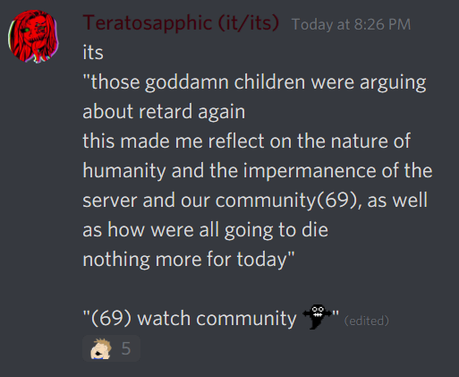
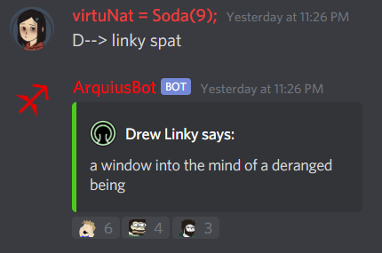
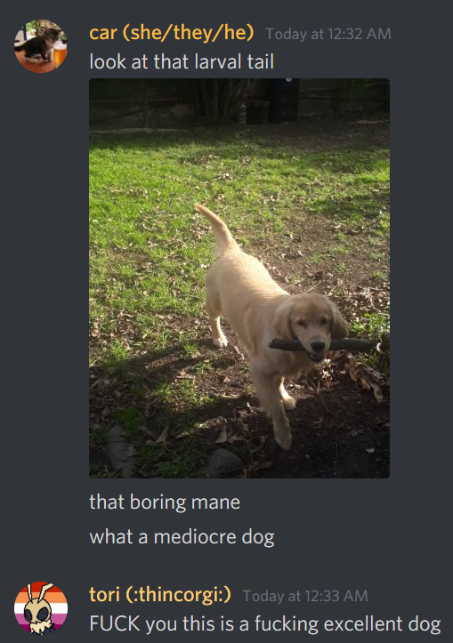
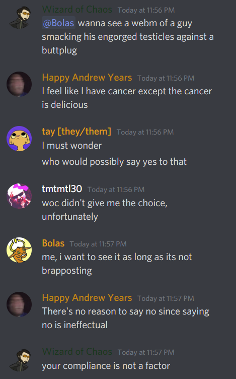

Drew Linky
1st of April - April Fool1’s Day 2020
After my ascendance, we tried to tell people that we weren’t doing anything for April Fool’s day because everyone was too tired and busy for it. I don’t think we fooled anyone really, but it was worth a try. At the stroke of midnight we enacted our plan: bringing back the theme from last year when the Epilogues were released, we condensed everything in the server down to two categories: meat and candy. Users were forced into a single channel called #prologue where they would be forced to choose a role using the same kind of system we have for choosing color roles, where one clicks a reaction and is given the corresponding role. Once they chose meat or candy, prologue was removed from their sight and they were put into the appropriate channel category.
Meat was where more serious channels went, specifically the Interests category. Everyone in those channels was expected to dwell under the rule of an iron fist, and at the first sign of dissent they were removed. Additionally, Jman created a bot for the day that checked all of the messages sent in #meat and muted people for increasing intervals of time if they sent a non-unique message (for anyone familiar, these are /r9k/ rules). Channels in candy, including the Creative category and the newly created #roleplay, were full of frivolous bullshit that had very little real moderation. In theory at least, no one was allowed to see both categories, and would be forced to stick in their chosen “timeline” all day unless banned.
The second layer of this event happened when a user was banned from meat, candy, or both somehow: we had a “reveal channel” called #pumpkin, which was actually the repurposed April Fool’s channel from previous years. Anyone banned from either “timeline” was sent there, and could access the Homestuck and general channels without issue as well as viewing the channels within Meat and Candy without being able to speak in them. Partway through the day the final episode to Pesterquest released so we opened up that channel to everyone, which I felt lessened the overall event just a bit2.
In the afternoon, a strange tradition formed where the meat category was ruled by Anervaria in the form of an authoritarian character from Homestuck, and eventually she formed the “Crocker Corps.” The candy side, in contrast, formed the Lalonde Revolution (whose symbol of “resistance” became a rose). Both sides fought for control of the #pumpkin channel. This became the culmination of the event, where meat, candy, AND pumpkin users ended up choosing one side or another. It was a totally unexpected development, and it was really interesting to see this organically play out as the day came to a close.
As it is the server carried on this way for almost the entire day, from midnight to 10 PM EST. There were some hiccups in the beginning due to Discord’s category settings being strange and not working as anticipated, but within fifteen minutes or so everything was set and working properly. The message was deleted so I can’t know for sure, but the last time I checked it we had 600 people who had chosen candy and 1,000 people who had chosen meat. The activity was absolutely incredible, with over 65,000 messages getting sent in the relevant channels throughout the day.
There were of course the usual bevy of complaints from people who found the event annoying, but for the most part it seemed as if everyone had a lot of fun, and that’s really all we can ask for. Overall I would consider this year a great success, and in some unanticipated ways. It’ll be very hard to do better next year.
Nothing more for today.
8th of April
It’s been a while since I did a proper write up of any day in the server aside from April Fool’s. The motivation to write things has been dwindling hard between finishing up my graduate degree and maintaining the server as its admin, so I’ve been terrible at keeping notes over the last several weeks. Using what I remember, I’m going to use this entry to briefly write up some of the more noteworthy things that have happened or are currently happening.
First and foremost, it’s important to note that some switchups in the moderator team have happened. Almost all of the old members are there, except for Jman, who stepped down for personal reasons after April Fool’s Day--kind of his swansong, in a way. WoC, on the other hand, was elevated to the position of full mod due to his considerable tenure, being part of the mod team longer than literally anyone else, and for displaying great critical thinking and level headedness when he cares to. He and Mines were both my choices for interacting with the liaisons from the official team for Homestuck, although there’s nothing to report on that yet.
Relatedly, we added a bunch of new janitors to the team at the beginning of March: Neth and Erieolae joined Qweq to watch over #general, Vortrex is now looking after #altgen with Prime, a user named Shroom for #serious, Penumbra for the Homestuck category, and we welcomed back Tera as janitor for the art channels. Moonjail was also added as the janitor for #music since Cyrene stated they’ll be out of commission for a while, but Moon has been so good at their job--increasing activity and making sure it stays of high quality--that we elevated them to pseudo-mod about a week ago. I think everyone is okay or even happy with these changes, and we’ve seen a lot of good coming out of it.
There’s something I want to touch on: I mentioned the release of the final episode of Pesterquest in the April Fool’s entry: not to go into too much detail, but on the day it came out there was a brief back and forth between myself and a user named Furrylatula regarding its overall reception. They claimed that pretty much everywhere besides the Homestuck Discord, reception to it has been really positive; within the server, the reception seems to have been mixed bordering on poor. This observation is fine and I’m sure it’s mostly correct, but then they used it to say that the HSD is an echo chamber of negative opinions. I took umbrage to this specifically, because by their own word this place wouldn’t fit the description of an echo chamber since there are a lot of conflicting opinions about the piece of media in question.
This is one of the more consistently frustrating accusations against us that I’ve seen throughout the last three years, precisely because we as mods take steps to make sure we don’t amplify one message over another. To be sure, we don’t always succeed at that goal for various reasons, not least of which is because we hold our own personal opinions regardless of our policies. The suggestion that we’re an echo chamber because people here openly express different opinions from the suggested norm is both ironic and mildly offensive. If I’m allowed to use a hamfisted metaphor, I think it’s important to note an island of varied opinions--not even pure, unguided criticism--floating in an ocean of praise. To be fair I don’t actually believe that the reception is universally good as was suggested, but that could spur a very long debate and here I want to keep the topic as just an aside, really.
For mspa-lit in particular, after many months of talking about it, Makin finally got people to organize and we’re watching LOST from beginning to end. We watch three or four episodes every Friday, Saturday, and Sunday, and at this point we’re about a week or two away from completing it. I’m reminded heavily of the group stream I had with Tera, Putnam, Andrew, and others where we watched literally all of King of the Hill over the course of several weeks. I’ve been missing an environment like this, and I can see us wanting or needing to do it more often as we go into the future. It’s just too fun and nice being part of a group of people who consistently watches things together. We haven’t been discussing LOST very much outside of when we watch it, but that’s probably to be expected--there’s a lot of moving elements in it and it’s difficult to really tell where we’ll be in coming episodes, so there’s not a lot of discussion to be had out of vague theorizing. It might have been different if we had been watching it together as it came out, instead of as basically an archival experience. Regardless, it’s been massively enjoyable for the last couple of months.
On a general basis, the server has shown a sharp uptick in the number of people we’re gaining and the number of messages sent per day. We surmise that it’s due to the coronavirus pandemic3--before things started to shut down in earnest and people were getting quarantined, we were seeing an average of 15,000 to 17,000 messages a day. After things started kicking off, it’s been closer to 23,000 to 25,000 per day, with some days spiking up over 30,000 for no real reason at all. It’s been kind of astonishing to witness, although I’m sure the addition of new janitors has helped at least a bit.
Some of that activity has of course touched on the stir craziness a few people have been feeling after being told to stay at home. For some reason, a particular discussion that sticks out in my mind was Yark describing the experience lockdown in their own country. They hail from South Africa, and they mentioned that the last time anything remotely like this happened, it was because of apartheid. I’m not especially sure why, but something about this kind of contextualized how unusual it must be for everyone around the world undergoing the same thing.
I hope that everyone in the server is managing to stay safe and healthy, although it’s chilling to think that statistically speaking at least a few people who are members of this server won’t survive this pandemic. For the most part though, I’m glad for the idea that a lot of the people here are using it as a way to keep in contact with others and talk during the shut-in. Perhaps people took it for granted mostly, but the internet has really changed how things work. Communities like this are really special, and I’m happy we’ve been able to keep it going despite everything4.
Nothing more for today.
13th of April - 11th Anniversary of Homestuck
I should describe the less pleasant things first and get them out of the way: Jman decided to take a break from the server for a few months, which he had already informed us about and stepped down from the mod team for. Skyplayer similarly left, due to feeling like there was an increasing gulf between her interests and beliefs and the rest of the chat. Jman is coming back eventually, so his departure is fine, but Skyplayer leaving stings a bit. Still, there had been more incidents where we had to tell her off for things that should have been common sense. I hope that whatever she does, she’s able to stay safe and be happy.
These things aside, this year was the first time I’ve handled the community stream all by myself, and if I’m allowed to say so, I believe I did a pretty good job. We streamed The NeverEnding Story and the special edition of Con Air, the latter of which is of course mandatory for the April 13th streams. I believe we’ve done The NeverEnding Story in a previous community stream, but long ago enough that I either wasn’t around for it or don’t remember. Either way, they were both a resounding success with over a hundred people viewing.
We had a major surprise for the day, with the release of a new official album. “Beyond Canon” is the first Homestuck 2 album, and it was honestly extremely exciting. When new albums come out, official or major fan releases, we also stream those using Twitch. I had never done this before, but Makin walked me through it a bit and I was able to get it set up before we had finished Con Air. Reception to the new album was overwhelmingly positive, as it had a lot of good themed music and a wide variety of genres, and it had an extensive array of composers from Homestuck’s history involved.
As is tradition we closed out with the Monifate Sweet Bro and Hella Jeff Moive. I’ve described this extensively in a previous entry, specifically the entry for the 13th of April last year. We had a surprising amount of people make it to the end of that, and I think I’ve made it a tradition to stream LuminantAegis’s 24 hour Homestuck music stream on Youtube to gently close out the night after that. At midnight I officially closed it by putting on Bowman’s Credit Score video on repeat until the next community stream.
As I said, overall today was a great success. It wasn’t anywhere near the scale of last year, which was the 10th anniversary, but considering we’ve been here for literally over a decade, I think this went very well. Hard to believe it’s already been a year since the Epilogues were first revealed to us; it was an incredibly turbulent time. Though official content is certainly not as interesting now as it was this time last year, here’s to hoping that this community continues to endure as time goes on.
Nothing more for today.
24th of April
We finished watching through LOST last week. Although the end had a kind of mixed reception, I felt that same sense that I get at the end of any solid community stream, starting with the great King of the Hill stream I had a couple years ago with Tera, Putnam, Andrew, and a couple others. I’m really, earnestly going to miss the LOST streams. Each one we complete is one more show that’s cast into the communal fire, fuel to keep conversation going.
Makin is going to try and use this weekend to help us find out the next big stream show, though he’s been doing Community as a pre-stream everytime we did LOST. I don’t give a single solitary fuck about that show, except for Chevy Chase’s wonderful performance as a scumbag, but when they finish that I think he’s going to start pre-streaming with Avatar: the Last Airbender instead. I look forward to that greatly.
Less pleasantly, Moonjail’s first couple of weeks as a pseudo-mod here have been kind of turbulent, I’m afraid to say. A couple days ago there was an argument with Tensei about the coronavirus pandemic, specifically with regard to missteps in arguments where Moonjail’s position was misrepresented, and then I got upset and said that everyone present needed some scientific education because of people misinterpreting graphs. Moonjail appropriately took umbrage to this because of their extensive background in science, although to keep things short, I believe we all managed to come to an understanding with each other by the end of the night. Apologies were exchanged, people hugged and cried, et cetera.
Unfortunately, it happened again today in an official capacity: Moonjail was trying to mod their channel and wanted to tell people not to say the word “retard” in it, but then the user that was told off for it complained to WoC. WoC bitched at Moonjail which caused hard feelings to churn, and I had to step in to try and calm things down in the janitor chat. Understanding was reached shortly enough, but Moonjail said that this miscommunication and subsequent bitterness was strike two of three for them (the first strike was not the argument with Tensei, but rather Valkyrie getting upset over something in altgen concerning a shitty user who I personally told Moonjail to ban).
Although I think threatening to resign is a bit drastic of a response personally, on another level I can totally sympathize with that. We can’t run a perfectly tight ship, but we also should be better at preventing these kinds of internal conflicts. To that end, I hope we manage to avoid anything else like this, at least for a while. It’s been good having Moonjail on the team and I would hate to lose them.
In the grand scheme this is all kind of a petty altercation, and so I want to say that the only reason I bothered to include these details in this journal is so I could include this mock summarization that Tera wrote up in the janitor chat:

You’re all welcome.
I want to briefly describe a couple of users who have been hanging around in mspa-lit for a while now too. Barkley and Husky have both been active for some months now, and they’ve both been very good at fitting in since they first joined. Husky is less active than Barkley, but they both seem to already be fairly knowledgeable in the sorts of things we discuss, and share a good mix of calmness mixed with humor where it’s appropriate. I’ve noticed Barkley in particular providing a large number of quality additions to conversations; as it is, I’m sincerely glad that both of them are here and participating.
Relatedly, other people like Velikiy and Yark, from altgen and gen respectively, have been increasingly talking in here over a period of several months. I’m not sure how to estimate the size of our little group by now, but it’s a wonderfully diverse bunch of opinions and viewpoints here. Despite Tera’s joke summary up there, it does stand: I’ve reflected on the nature of humanity and the impermanence in our server and community, and all I can say is that it’s good.
Nothing more for today.
29th of April
There’s been a substantial increase in activity this month. Some of that is expected--April Fool’s Day and especially the 13th, of course, are both associated with huge spikes in activity. This year has been different from the last two though, in that the rest of the month in general has also seen a greatly increased amount of activity. I’m sure this is due to a combination of factors, but the ones that come to mind most readily are a steady rise in the momentum of update culture5, as well as some relaxed standards since I’ve been put in charge.
That latter point isn’t really a positive one, I really need to start hammering down on some of the less savory activity that’s been developing here. For all of the concern that people outside of our server had with Makin, he ran a very tight ship. It’s going to take a long time before I get to that level, if ever, where I’m totally fine with casually ridding this place of malfeasants. I doubt I’ll ever be as wacky zany about stuff either, but I think that part is fine; it’s a great personality trait for creating excitement or entertainment, but I’ve never felt it was the best way to run a community. Time will tell, I suppose.
Today and yesterday in particular were fairly active due to a Homestuck 2 update that proved to be extremely contentious, both within our community and in the fandom at large. I’ll briefly cover the details later, but as an overview there were at least two or three things in it that managed to variously offend people. Some people simply said, “it made me feel bad,” which was a common enough refrain when the Epilogues were released this time last year. This isn’t something that can be discussed to any real degree, so I usually skip over such complaints.
In contrast, there were a lot of comments pointing out specific things that they deemed bad, which was far better. I added my own opinion to these conversations and went on my merry way. When I checked back later though, I saw an increasing number of comments from people who did like the update, and subsequently were accusing everyone who didn’t like it of being whiny children, stuff like that.
In defense of these people, I also saw some comments going in the reverse direction, saying that anyone who liked the update was a fool. Obviously both of these sentiments are wrong, in a way that’s paradoxically inflammatory and boring. There are some subtleties to this that I wanted to point out, but I think I’ll avoid over-explaining this time. The greater point is that there was a lot of mudslinging back and forth over this update. This isn’t outside the norm for all Homestuck 2 updates, really, but it got into some particularly nasty territory this time.
Before I mentioned that I would briefly cover some details about the nature of the discourse, but the more I think about it the more I want to explain fully6. This will undoubtedly be murky to people who aren’t familiar with Homestuck or even these events in particular, but hopefully it should shed some light on the issue regardless.
Some of the conflict over this update manifested in the form of comments made on Twitter by one of the official team members for Homestuck 2, who focused on a really specific complaint that isn’t too complicated to get into: namely, the question of whether or not flashes should be included in Homestuck 2. Their assertion was that creating flashes for Homestuck 2 isn’t viable because it would take too long, which would subsequently cause there to be a halt in the story while they made it. They also mentioned that Adobe Flash Player will no longer be supported after this year.
These things seem reasonable on the surface, but there’s a few reasons that it doesn’t really hold up. The most obvious one is that “flash” doesn’t really refer to the actual software that Hussie used to make animations; over time it’s become a colloquialism for any piece of animation, or even more loosely as any other pieces of media that aren’t just pictures and text. Realistically the team could use any software to make animations if they chose, it wouldn’t really matter.
Second is that flashes aren’t just flavor sprinkled in here and there to add stuff to the comic, although that was true plenty of times. Flashes were often used to bookend entire sections of the story, and to display major events of narrative progression. It would certainly take more time to create a flash than to simply draw panels and write text, but those sorts of delays are things that ardent fans of Homestuck have been used to for years. Further, the delay would be offset by a product that--if done right--would be far more appealing, engaging, and create more artistic diversity than just regular pictures and/or text7.
The particular thing that spurred this discourse was the first instance of any kind of real combat in Homestuck 2, which often enough was depicted with a flash animation in the original comic. This time, however, they didn’t have any visual depictions of this at all, animated or otherwise; it was solely text, which just smacks of laziness at this point. It came across to many of us as a way to weasel out of the hard part of making this webcomic. Indeed, at some point in the past, Hussie specifically mentioned that art is far harder to do than writing, and I’m sure creating visualizations of this battle would have constituted a large amount of work.
That having been said, I’m not sure why there are six writers attached to this project when one or two would probably get the job done just fine. I would go so far as to say that having so many writers is actively a detriment, because it leads to a larger variety of tones and styles that can conflict with each other, creating a work that’s more confusing for it. Since art seems to be the limiting factor in creating this comic, it makes way more sense to try and get as many artists involved as possible; contrasting art is far less of a problem than contrasting writing, and would actually be in line with the variable art styles found in the original comic.
Returning to the matter of complaints from an official team member, the overall point of my explanations is that deliberately choosing not to have any animations or anything else like that is kind of antithetical to Homestuck. A potential explanation for their decision that I saw someone describe on the subreddit is that the official team either doesn’t care enough to put in the effort or just doesn’t have the skill to make these things.
I wouldn’t be surprised if this was the case, because the reasons provided originally were nonsensical or irrelevant. As it is, the tweets were deleted (part of the reason I’m specifically omitting the name of the person who made them), which indicates to me that the official team isn’t even interested in discussing the possibility. This is sorely disappointing, but to be honest the question of flashes is arguably the least important thing that people were complaining about with regard to this latest update, it was probably just the most straightforward to try and respond to.
Instead, the very end of the update had a development which was so out of character for three key figures in the comic that it can only be described as ludicrous. I’m earnestly struggling to think of how much detail I should go into with this because it’s honestly mind boggling in its absurdity; I can’t be too sparing because then the depth of the issue will be lost, but if I use too much it’s going to appear completely insane to anyone who isn’t already intimately aware of these things.
I guess it can be condensed down into two things: the first and arguably less contentious one is that two of the characters had a secret child that they named “Yiffany,” a direct reference to “yiffing,” which is a term that refers to furries having sex. People less familiar with Homestuck will have to take me at my word that this sort of thing is so outside the realm of reasonability for these characters that it can only be described as ridiculous. A vast majority of the complaints on the subreddit and Discord server centered around this particular thing because of just how drastically it deviated from the expected behavior of the characters involved.
This is something that specifically matters to people who care about Homestuck as a story, and about the things within that story. Outside the importance of fictional consistency, people were also angry about this because of the implication that one of the characters canonically had their genitalia changed to a dog penis (do you see what I mean about not being sure how much detail I need to get into?).
This is important because the writers, I believe, were using it as a piece of trans representation, but there were some points of opposition to this idea: one that was more gentle was that it was too convoluted a thing if it was a 100% real development; it would make more sense for it to be an excuse for the character having been trans all along. More serious detractors suggest that the implication is by nature offensive to trans people. I don’t really understand the particulars of any of these stances, it’s merely what I’ve seen over the last two days8.
As it is, I think this reveals something important about the nature of storytelling, or specifically a problem with what I see the creators are trying to do. Making a story that treats ideas of identity politics, diegetically or not, is going to attract controversy. If that’s the sole point of the work, that’s probably a completely expected result and as such it’s fine. Where this becomes a problem is when a story that didn’t originally focus on such issues makes it seep into how the fandom discusses the work. Something that I’ve seen proven true many, many times over the years is that conflicting ideologies in identity politics will invariably cause people to eat each other alive over precisely which idea or method of representation is the most correct one. That conversation is fine even if I want no part in it, but there’s a lot of back and forth between the creators of the comic and fans who aren’t pleased with the way this was all done9.
This is pretty bothersome stuff. With other media that I’ve seen interactions between fans and the creators, the people making the work typically ignore stupid or inflammatory comments and then engage positively with others. If a lot of fans are unified in bringing up issues they see with the work, good content creators will at least respond to those people in earnest, and the best content creators actually take those complaints into consideration and try to fix it in the next installment of whatever they’re working on.
That’s not happening in this case. Instead, as with the laborious explanation above concerning flashes, the official team members are simply digging in their heels. Like I said, that’s fine to do if you’re just ignoring comments that are stupid or inflammatory. However, members for the official team tend to lash out at people instead of merely ignoring them. This makes them seem cruel and petty, and I’ve seen an increasing number of people who actively hate their work because of that kind of behavior. I don’t know what kind of measure they’re using to deem their work a success, but from every metric I can see it doesn’t go well when they do shit like this10.
It brings up a lot of questions about what exactly their intentions are with this story, such as what exactly they care about and how much they care. I’ll touch on this idea again later, but what exactly is their measure for success? It’s really puzzling: if they’re going for critical success they’re failing spectacularly, especially when they deliberately ignore the kinds of conventions that made Homestuck proper as successful as it was. If they’re going for commercial success then that’s pretty much a failure too, with Patreon subscriptions remaining pretty much around 2,100 people since they started six months ago.
The more they engage in petty squabbles with fandom members or insult their suggestions, the more people will be turned off from their work, and the worse it’ll do. At some point they’re going to have to face the reality that they can’t have their cake and eat it too; they can do what they want, but they won’t be able to escape criticism when they do certain things. Sometimes I worry that they’ll never approach a point where they start to acknowledge their own shortcomings or the critiques and suggestions of the fandom. If that’s the case, then Homestuck 2 is doomed to failure. I really hope that they can avoid this, but given what I’ve seen so far I’m not very optimistic.
I’ve spent way too much talking about this, and I want to return to something positive before moving onto the next couple of things I wanted to write about. I mentioned that a majority of the interactions between people who did or did not like this update were negative almost to the point of hostility. However, I personally had a nice interaction on the subreddit with our music-turned-Homestuck pseudo-mod Cyrene. She enjoyed the update and I did not, but instead of ripping into each other about it, we had a pretty lengthy discussion about the nature of art and how people respond to it.
That former idea I’ll describe a bit later, but with the latter she effectively framed things in terms of “absolute versus relative criticism.” In short, the idea is that criticism can be presented harshly and as an objective thing (absolute) or it can be presented as an opinion (relative). For the purposes of getting through to the person you’re criticizing, relative criticism is more effective because it’s less confrontational and brash. This makes sense, and often enough I think that’s a nicer way of dispensing suggestions about a given work11.
On the other hand, I described that absolute criticism is often just a shorthand for what would otherwise be offered in a relative way; phrasing criticism in a relative way requires exponentially more energy and patience as you expose yourself to more content and become more confident in your power of analysis. Absolute criticism that doesn’t actually deliver anything useful is twice as frustrating as relative criticism that is similarly useless. However, if the suggestion therein is genuine and useful, then it shouldn’t matter how it’s phrased. If the worst thing you can say about criticism is that it’s phrased rudely, then it’s still worth listening to.
Based on this, I disagreed with Cyrene on the premise of their argument. As I’ve come to trust her to do, she took this in good faith and we both brought the conversation to an end amicably. We got a decent look at each other’s mindsets about why we did or did not like the update, and were able to explain ourselves as fully as possible. I’m not particularly surprised given who I was speaking to, but it was pleasant nonetheless.
I’ve mentioned the former idea--the nature of art--a couple of times in this entry and promised an explanation. To that end, we discussed it extensively in the Discord server today. Very often in the past we’ve had arguments about whether or not art can be appraised objectively, which is an absolutely monstrous topic whenever it pops up. Today was probably the first time where I felt we came to some kind of consensus about that particular idea.
Misha has probably been one of the most firm proponents that art can be judged objectively, but former explanations of why have been kind of wanting. He expounded on it more fully today, suggesting that art as an innate expression of creativity is itself subjective. However, he also posited that art can and should be delineated through strict, assumed axioms of quality. These axioms will necessarily differ based on what exactly is being discussed and by who, but his insistence is that whatever definitions are in place provide a fundamental basis for discussing art with other people, or enables one to talk about art with a specific goal in mind (he claimed, too, that this thorough explanation has always been what he meant, but I certainly never got this specific meaning out of his previous arguments).
Magistrate, Mines, and a couple others all pointed out that an assumed axiom is necessarily arbitrary, and as such is only a “subjectively objective” standard. Misha and I have seen that rebuttal pushed before, but it rankles with us a lot: qualifying everything as “subjective” might be true to a certain extent, but that word tends to be thrown out too often in these kinds of conversations.
To explain this a little more, describing opinions as subjective is often a quick and cheap way for some people to try and equalize all opinions with each other, which is horrible for a couple of reasons. It muddies the waters significantly, which robs conversations of a lot of their constructive quality and makes them less worth having. It’s not a problem to say that art is subjective, but it’s a problem to say that all art is equally valid12 or good, and I feel that distinction is often lost or outright ignored.
As it is, this conversation did not end like others before it: we were able to reach something of a consensus in this way, which of course was really pleasant. Really, in keeping with what I said at the beginning of this entry, the channel was active to a superlative degree for the entire day. All of it reminded me of a couple years ago, when we used to have discussions like this on a nigh daily basis. I hate to turn into the stereotypical old fogie, but it was exciting and made me nostalgic for the past.
To end on a more unique note, I haven’t yet described something fun that WoC and Nat have done with Arquiusbot. Since I took the reins of the server, they created the command “D→ linky,” which takes a random message from my posting history up to the last time the bot was restarted and spits it out. The idea is very silly, but it’s easily one of the most popular functions the bot has now13.
Almost every day there’s been a little time where there’s a glut of people using the command for fun as a magic 8ball by asking it specific questions, or simply seeing what it'll spit out. MrNostalgic and others have pointed out multiple instances where the result of the command was eerily appropriate and thus funny. Case in point:

This is probably among the best so far, and as the bot gets more samples to work with I’m sure even better examples will pop up eventually. Obviously it’s random chance for a given message to pop out, but there’s already some jokes that the bot is secretly sentient because of all this. WoC and Nat have done an excellent job with maintaining this bot, and I’m sure I speak for all of us when I say I’m looking forward to seeing what else they do with it.
Nothing more for today.
12th of May
There were some really specifically interesting interactions today in mspa-lit, although when I think about it, I’m not sure they were anything out of the ordinary. It’s worth noting that yesterday I finally finished a real life obligation that was extremely pressing and taking up a lot of my focus; it may be I’ve finally freed up enough attention that I can see what’s happening in the chat more clearly again. Regardless, I actually felt like writing my thoughts on it down instead of letting it go.
Andrew and Tensei occupy opposite ends of the conversational spectrum. Andrew is perpetually awkward, and his contributions to a given discussion are usually clumsy beyond reason. Tensei on the other hand always manages to contribute stuff that’s smooth, so to speak; he jokes and speaks casually of course, but when he submits anything substantial it’s almost always constructive, funny, or both14. He’s a savvy conversationalist and I’d go so far as to say that he runs circles around most other people in the chat, either through general experience or cleverness.
I feel like both of those chat personalities are important in maintaining a more interesting place to speak in. I guess the simplest explanation for it is that it’s the principle of juxtaposition; contrast between two dissimilar things makes both of them more enjoyable. At any given time I would be more than happy to speak with Tensei or Andrew, but having them both in the same discussion together somehow elevates whatever we’re talking about.
Perhaps some context would help add texture to what I’m trying to say. At some point Tensei brought up Dark Souls III and described it as “soulless.” Andrew agreed with him, remarking that it looks desaturated and reuses assets from a different game, or something to that effect. Tensei responded by saying “stop agreeing with me for the wrong reasons / it makes me look like an idiot by association / god you are the worst.”
I’m not sure why this stuck out to me as much as it did, but I think what cemented my observation was WoC chiming in: “i hate it when andrew agrees with me for this exact reason / its always the worst possible reason to agree.” To an outside observer I’m sure this appears excessively mean, but it’s actually well within the typical sort of banter of our group, especially when it comes to Andrew. I think I would be less okay with it except for the fact that Andrew himself recognizes this aspect of himself, and arguably indulges in it a bit: “I mean yeah I'm aware of it, all my most passionate opinions on things are on the things everyone else regard as arbitrary.”
Something about this interaction stuck itself into my mind and I couldn’t stop thinking about it for almost half an hour. I think it called to mind a conversation I had once back in the Sydlexia IRC channel, probably in 2012 or 2013. In that conversation I think I employed an obtuse metaphor where I compared personalities to spices or ingredients: people may enjoy a particular kind of flavor over others, but a blend of flavors leads to a more well-rounded dish and makes food more interesting15.
Individual people hold an array of personalities and viewpoints, and the right balance is needed in order for a group to become greater than the sum of its parts. If everyone involved in a chatroom naturally agreed on everything and believed in all the same things, it might feel validating at first but would grow boring and ultimately be unfulfilling. If no one agrees on anything, then there would be no reason for anyone to stick around.
Obviously, those are the two extremes in what’s usually a far more complex, multilayered arrangement. I variously agree and disagree on things with just about everyone in mspa-lit; Andrew and I share certain ideas, but as with Tensei and WoC tonight, often enough his reasoning makes no sense to me. Conversely, I genuinely appreciate Tensei’s contributions to the chat because he’s typically pretty insightful and inspires thought in people, although sometimes I disagree with what he has to say, or find it frustrating because I’m unsure how serious he’s being.
My overall point is that having a mix of these attributes contributes to the overall enjoyment of talking in places like mspa-lit. In fact, I would go so far as to say that it’s a critical ingredient of any chatroom that persists for any meaningful amount of time. If you don’t have the right combination of people/personality types, it’s almost certain that a given group will disintegrate in short order; this is why homogenous groups of kindred spirits (for example, SmolMuffin’s altgen exodus a couple years ago) never last long.
Mspa-lit and other places on the Homestuck Discord Server are extremely lucky in the sense that new people tend to find their way in and keep things fresh for everyone involved. Over time, that mutual enjoyment turns into genuine appreciation for each other, and leads to the establishment of the casual friendships that the server has seen so much of over the last four years. It’s nice to be reminded sometimes of the various reasons that can happen.
This doesn’t really have anything to do with tonight specifically, but I guess I should take this opportunity to mention that Gnawms ended his self-imposed exile. Actually, he may have thought he was actually banned, or he may have just thought he was unwelcome, I’m not particular sure which. Either way, it’s been a very interesting experience having him back in our fold, and one that I would say is extremely welcome.
Gnawms still has the same sense of humor from back when he and Tensei had the altercation that originally led to his departure, but it’s somewhat toned down. At the very least, there have been no complications when they talk at the same time from what I can see. Gnawms has this peculiar, ineffable quality in the way he speaks that makes me laugh incredibly hard when it catches me off guard. I’m not sure what other people think of his presence precisely, but I’m pretty glad that he’s returned.
Nothing more for today.
13th of May
Sometimes I find myself wondering how many different kinds of people there are who talk online. I’ve already talked quite a bit about lurkers, for instance, who join but say nothing and simply watch the chat indefinitely. There are people who hop right into conversation without much of an issue. Others take a bit longer to get used to it, but warm up well enough when they spend some time trying to participate. I’m sure there are many other “types” of conversationalists for online discussions.
I encountered a type today that’s more rare, but is wholly unpleasant. I wouldn’t go so far as to call them attention hogs, but “bratty child” is certainly a descriptor that comes to mind. After a rousing sacrifice in altgen (two of them in a row, in fact) I decided to drop into #general to chat with people and see what was going on, as I tend not to do that enough. Immediately I noticed a fellow named Alix who was trying to elicit attention from people, and failing to do so in a subtle manner.
Normally this is the result of someone who has poor social skills, which is more than excusable. When I was younger and not really used to talking to other people, I made plenty of blunders and didn’t really know how to behave competently16. This is a problem everyone faces at one time or another, and more often than not it’s worth trying to teach them how to be better. Alix did not fit into this category, whining immediately when people stopped explicitly trying to include them in the conversation.
At first I asked what was going on and if there was anything I could do to help, and Alix said no. They tried to bring up a topic, but naturally conversation gravitated towards something else because the whims of the chat are largely unpredictable and uncontrollable. Alix took this as a personal insult and told everyone to fuck off, and claimed they were going to leave the server.
I feel like on any other day I would tolerate this and tell them to tone it down, but something about the sheer indignance with which Alix was saying this nonsense immediately ticked me off. I think it was the fact that they transparently felt entitled to special attention, I can’t handle that sort of thing. I immediately banned them, and normally I would have felt at least a mild pang of regret but in this instance there is no such reticence.
It’s good, even prudent, to try and take time to educate people who simply don’t know any better. People who act with clear malice or uncaring selfishness are much more difficult to handle, and I don’t think the responsibility necessarily falls on anyone to tolerate that sort of thing. I am grateful beyond words that the vast majority of people participating on this server are at least semi-reasonable. I wish that my takeaway from today was more positive, because aside from this one awful person, everything was great. I guess that speaks to the power of perception that one bad thing can stick out in my mind against all of the good.
But upon further thought, I really don’t want this to be the last thing I think of for today. I’ve been promising myself that I would get back to writing descriptions--even if brief--of newer faces that have left an impression on me. I’ve thought of a couple of people who deserve some mention, maybe more if I have the energy for it.
I mentioned Magistrate in a recent entry, although glancing back at my writing, I realize I’ve never explained who he is. Magistrate wrote one of the stories in Makin’s list of shills, specifically Modern Cannibals. He joined some time ago, I believe when he learned that his story was being discussed in mspa-lit, but he spoke very rarely. Recently he began participating far more often, and I’m not particularly sure why.
Magistrate is basically the only person in the chat that most of us would consider an “actual author,” by whatever arbitrary standard we may use to make that assessment. There are of course other people in the channel who write their own material, such as Cyrene with her Tales of Excitement! (itself worthy of brief description, as an aside: emulating the tone of serial films, the version I linked is actually a cleaner rewrite of what was originally an absurdly NSFW story that Cy shared sometime last year, or even before. She’s taken to shilling this late at night and has been somewhat dispirited at the lack of response to it, I’ve advised that she bring it up less often and at a different time of day to try and have more success17).
I’m not exactly sure why, but I feel as if Modern Cannibals sets Magistrate apart; I believe we all consider it a consummate work, where perhaps the rest of us are just getting a feeling for the practice. He seems to be rather unflappable, not participating during frenzies or otherwise spirited conversations, unless they happen to involve literature. Perhaps that’s why I place him above the rest of us in terms of writing; he seems to be genuinely knowledgeable about the process of writing and shares critique or thoughts on the topic that’s more adroit than what the rest of us typically have to offer.
Magistrate is currently reading through Worth the Candle, albeit extremely slowly: they began about a week or two ago and are only six chapters in, where the work itself is over 200 chapters long now. The beginning of the story is rough to the point that we typically end up frontloading newcomers with that information so they’re more likely to get through it to the better parts. Magistrate has been pretty fair in describing the shortcomings of the parts he’s read so far, while also giving it a fair shake. We’re all openly hoping that he comes to enjoy it and continues reading of his own volition, rather than to just satisfy us. Overall, his presence here has been rather interesting to see develop over the last month or so, and I’m curious to see how his participation changes or takes shape over time.
Misha has a friend named Mint, whom I met when we tried to establish a Warhammer Fantasy tabletop game some months ago. Unbeknownst to me, Mint actually joined the HSD sometime last year and had been participating infrequently since. In recent weeks though, she emerged from the woodwork and has been speaking quite often. Mint and Misha share some sensibilities and humor, although the former tends to be more measured when she offers her opinions or thoughts on a given topic.
I’ve also seen Mint cavorting around in #general more than Misha ever does, so I assume she does a better job socializing with strangers than we typically do. As it is, she’s also joined us for group streams, actively participating in watching Fringe (our chosen replacement for LOST, now that it’s over with) and possibly Community, though I’m not certain of the latter. Given her friendship with Misha it’s not exactly a surprise that she’s managed to fit into the place as well as she has, but it’s a nice development nonetheless.
As far as newer participants are concerned, Magistrate and Mint come to mind most readily, although I’ve mentioned two others recently (Husky and Barkley) and there are a bevy of others who pop in from time to time. There are some names that I explicitly recognize at this point (Bones, vR, Swish, Null, among others) but don’t yet have a solid grasp of who they are or what they’re like.
My mind has been skating over these details for the last several months, but tonight there’s something different; I feel like some of my old energy has returned, that which I used to have for interacting with people and becoming familiar with them. I hope I can keep that up, though it depends on the coming months and what happens in them, both personally and with respect to the HSD. I haven’t felt this engaged in a while, but I’m excited for the possibility that it’ll improve with time.
Nothing more for today.
25th of May
We beat Terraria together today. Misha and others were getting quite annoyed with us for spending so much time on it, but it was absolutely worthwhile. A solid week and then some of getting online and trying our best to make progress together brought back some of the feeling of playing with friends from older communities, ages ago. I’ve stopped doubting that the magic exists, but it’s always good to feel it again.
To celebrate the end of it, we also decided to have one last romp by going through the entire game on an easier difficulty with our top-level gear. It was about an hour or two of unmitigated fun, with us doing nonsensical bullshit the entire time. It was a victory lap, essentially; between that and playing the game through in the first place, I haven’t had quite so much fun in a while. It goes without saying, but I look forward to the next time we find something to play together.
Less pleasantly, today we discovered that MSPA is experiencing significant problems, in the form of assets breaking or being removed. The main URL still redirects to homestuck.com, but the new website has been utilizing a ton of assets that were in fact linked directly from the original website. Those assets are thus broken on both MSPA and homestuck.com now, which means that much of the comic has been rendered literally unreadable.
It was already a problem when some of the flash files weren’t functioning properly, being turned into subpar Youtube videos. Some of those flashes are games, and the videos that have been linked as “official mirrors” for those games are borderline offensive in how lazy and unthorough they are. Much of the comic is like this now, really, in the sense that a lack of care or organization has gradually broken it in worse and worse ways over time.
To be honest, the entire property seems to have fallen into an acute state of dysfunction. We’ve been due to receive news about Hiveswap: Act 2 for ages now but have gotten basically nothing besides whatever scrap we got over a year ago now (or was it two? I can’t even remember18). The first act came out four years after the Kickstarter for Hiveswap ended, and we joked about it taking another four years to get the second. At this rate, it seems like it will actually be four years between the first and second acts, and I’m honestly afraid it’ll be even longer.
We got an official statement saying that Homestuck 2 will not receive any updates for June to “give the team a break,” if I’m not mistaken. I’ll immediately recognize that the team said the Patreon backers will not be charged for the month of June, which eliminates most of the criticism I would have had about this news. A different thing to look at though, is the implication that the team needs a break from producing Homestuck 2. Far be it from me to ignore that the world at large is experiencing a significant amount of turmoil right now, and I’m sure that the team could use some more time to themselves. On the other hand, it’s not like Homestuck 2 was experiencing very rapid or intense development in the first place.
When I say that the property is dysfunctional, I mean that the people in charge of it are exhibiting an extreme level of disorganization and don’t actually seem to care that much about making it good or successful. Most if not all of the official team have moved from Twitter to Mastodon, which is a sort of open-source version of Twitter. From what I can tell, it operates much in the same way that Twitter does, but it can be modified sort of in the way a Tumblr blog can, with CSS adjustments and even some functionality changes.
I think the casual explanation the team has offered for this switch is that Twitter as a platform is unethical (supports Naziism, I think someone said?), which generally speaking is a stance that I sympathize with greatly. However, the more cynical among us--myself included at this point--believe that they made the switch for more personally motivated reasons. Specifically, Twitter doesn’t allow users full control over who can see their content or who they can interact with, where Mastodon gives them the tools or ability to develop those restrictions. In short, we think that they’ve moved to Mastodon so they can avoid seeing people who criticise them or their work. Again, this is by far the more cynical interpretation of what’s going on, but given everything that’s already happened I don’t think it’s outside the realm of possibility. The fact that it’s possible to consider this at all in the context of content creators associating with their fans is outright depressing. For now, there’s not much more to be said about it besides that.
To speak of things more directly related to the server, we’ve encountered some pieces of culture in altgen recently that have really, really disturbed us. One of the mods--Moonjail or an altgen pseudo, I think--noticed a really rancid meme about grooming children or being a pedophile, and then after some investigation we found a few more of these from the past few days alone. Once the issue was brought to the rest of the team’s attention, we immediately banned the people who posted the content in question, and then set to task finding a way to get rid of this kind of thing for good.
To be honest, we had been encountering problems like this one so frequently with altgen lately that I opted for the more extreme option. Sometimes, altgen culture rots and it needs to be removed (manifesting as a couple of Altgen Exoduses across previous years). In the past we19’ve “destroyed” altgen for a period of a few minutes to as long as an hour a few times, but today we decided to remove it for a far longer, unspecified amount of time.
We framed this as a test, where altgenners would be forced to disperse into the rest of the server and thus “reset” altgen’s culture. This was met with a lot of dismay, including some heavy discontent from a few members of the mod team, but we mitigated malcontents by saying that altgen would definitely be brought back if they behaved appropriately while mingling with the rest of the server. We never intended to fully delete the channel anyway, but so far this appears to be working out. I’m hopeful that it’ll end well and we’ll be able to nip any further ill behavior in the bud.
Nothing more for today.
28th of May
The closure has gone better than I expected. To be sure, it is not perfect: the close has led to the slight dispersal of altgenners throughout the server, leading to some chafing where people want to shitpost during larger conversations. Those people have gotten shut down though, which is kind of the result I wanted. In the general channel though, it’s led to a much better mix of culture than I initially expected.
The interaction of people who weren’t used to dealing with each other led to an explosion of activity on the first day, but it’s gradually wearing off. That being said, altgenners have definitely been behaving really well, so I think we’ll bring the channel back on Friday, or perhaps after the weekend. WoC and Misha are both against the idea of reopening at all, saying that the eradication of altgen culture should be made complete and noting the emergent culture we’re seeing as a good thing. Spiral and Makin, on the other hand, are dead set against leaving it closed. Their opinions are basically inconsequential at this point though; reopening the channel is a foregone conclusion at this point.
This being put aside, I’d like to point out something about Arquiusbot. The linkybot command has become the subject of significant overuse in mspa-lit. I and many other members of the channel have grown kind of annoyed with how often people will spam it in off hours or even when there’s already a conversation going. As a result, I’ve started liberally shutting it off whenever it gets too spammy. This causes some grumbling, but all of us agree that it’s getting old really fast at this rate.
That having been said, its use has led to some bizarre and interesting exchanges. In only 15 minutes, a combination of appropriate and weird answers to questions posed to linkybot led to the formation of a “fungus-based religion” surrounding myself and SPAT. This was helmed primarily by Husky and Multivac, but others such as Tarty, Canis, and Barkley all participated. Special commendations are owed to Mint, who drew a sketch for the occasion.
I’ll never cease being amazed at how quickly something that’s stupid or worthless can be turned into an object of enjoyment at the hands of the people in the channel. I think it’s one of the greater strengths of internet culture in general, and to some extent especially the kind of people in mspa-lit; the ability to casually transform a mundane concept into something entertaining is invaluable, and even though the precise events taking place tonight were dumb, it’s still kind of cool to think about how effortlessly it all transpired.
Nothing more for today.
9th of June
Today featured an odd debacle: Sozzay, in short, attempted to cheat on her university homework by asking people to submit small pieces of writing for her to add to a portfolio. It was a creative writing project with low requirements, which led to people either not caring about her request or getting really upset with her. Misha and I were among those who didn’t care so much (before I fully understood the scope of what was being asked, I actually submitted one of my own pieces of writing for her to use). On the other hand, Tensei, Mines, WoC, and especially tipsy were extremely displeased.
The reaction from general chat members was just as spread out, but some of it was predictably super strange in nature. Multivac got dunked on super hard for offering up a piece of writing and extensively defending her request in the first place. Supporting her isn’t the weird part, to be sure, rather it was the fact that he got extremely upset when Sozzay said she would edit it slightly. Tensei summarized it as thus: “multivac gave her his scalie fanfiction / then she edited it20 / to be less scaly / and added some random sentences for no reason / and multivac was pissed / for destroying the artistic integrity of his creative work / in short it was fucking hilarious.” Multivac has always been viewed as an odd duck for his justifications and the way he phrases his arguments, but this instance was so out there that it can only be described as absurd.
The part that really got people was near the end of the altercation: at some point Sozzay said, “i dont need anymore [submissions] btw fmndmnf21 i gathered enough simps,” which really pissed off some people. Tensei lost no time at all in joining in, calling me a simp for contributing my writing, as well as anyone else who had. Despite whatever pushback came her way, Sozzay almost openly reveled in the ensuing chaos. It was just a strange event overall.
Somehow, though, this exact situation has never really popped up. It’s been an unspoken rule in the science-math and coding-tech channels that people shouldn’t ask to cheat on their assignments, but this event resulted in us actually codifying it to some degree. It’s still not written down anywhere, but WoC and Mines have gone so far as to say that they would purposefully mess with anyone who did so in order to get them in trouble.
Nothing more for today.
11th of June
There was a huge discussion today in mspa-lit about various incidents that the mod team has had to deal with. I believe this started with reference to the infamous Mike Blossom incident, a screenshot of which can be found in WoC’s entry on the user submission page. From there it blossomed (ha ha) into a larger conversation about other ridiculous interactions the mod team has had with malcontents or just users in general over the last so many years.
The actual details of older interactions are lost to time, either through choice because they were so shitty, or because no one thought to document them. It’s probably better that they’re forgotten, in the sense that it would almost certainly be viewed as parading weirdos around and mocking them openly. That’s precisely what it is, to be fair, but it’s better not to do that sort of thing (too much, at least).
Whatever the bigger picture looks like, in this discussion we shared some of the more memorable incidents from the last year or two. A few examples include one user who messaged me at random and said “hey drew linkuy / linky* / i am coming for ur kneecaps” (this happened literally six days ago), a couple of lengthy rants from people that have effectively been turned into copypastas, such as this:
Serendipitously, at the same time as this conversation, there was an ongoing altercation between Tera and a user banned just recently.
I probably shouldn’t overexplain that interaction, but the main details are as follows: the user was banned for racist memes and then made an argument to the effect that “no black people enjoy Homestuck so it’s not a problem.” This was about the point where Tera began sharing screenshots with the rest of the janitorial staff and mods, and it only got weirder from then on. Tera appropriately explained how and why the guy’s behavior and viewpoints had led to a ban, but the user refused to see any of that as a problem (“I don’t take no for an answer. I’m hard headed”).
We started sharing this conversation in chat at some point, with redactions to protect the identity of the banned user of course, and the absolute culmination of this was the banned user hitting on Tera, saying they found it attractive. At this point chat members lost their collective mind over the proceedings; we literally could not believe that this was taking place before our very eyes. In a way, this user exceeded Mike Blossom in entertainment value; where Blossom’s interaction with me was masterful in its vulgarity and conciseness, Tera’s altercation was a comedy of horror.
Stuff like this happens far more often than people give us credit for (at one point I remarked, “... you people doubt us when we say we put up with some weird shit / ... / i swear that half the stuff we have to deal with, people would be in disbelief”22). Honestly, we were able to provide so many anecdotes for the chat that I briefly toyed with the idea of creating a #tales-from-modchat channel, where the only posts would be staff publicly describing or sharing censored screenshots of fucked up encounters with users from the server.
Almost everyone thought this was a terrible idea though, reasoning that it would lead to attention-seeking behavior and be flagrant mockery of our userbase. I have to regretfully agree with both of those arguments, so it’s another idea in the bin alongside #courtroom. Occasionally sharing stories with people in chat serves the same purpose anyway, and is far less codified to boot; there’s no point in fixing what isn’t broken, as the adage goes.
Nothing more for today.
13th of June
There was a weirdly animated discussion in mod chat today based around a concept we had started talking about some time ago, but that I hadn’t given a concrete ruling on. Namely, it’s been taken as an undisputed law that cropped porn is forbidden ever since people in altgen started to abuse it ages ago. However, what constitutes as “cropped porn” has always been a fuzzy concept because of the fact that we kind of venerate memes like gachi and to a lesser extent Ricardo Milos.
I guess most of us don’t actually participate much in Ricardo-posting, that would mostly be WoC. As a brief aside, WoC frequently DMs me with whatever meme or gif that he finds interesting or funny at the time. For a period of some months, those memes consisted almost solely of Ricardo bait-and-switch gifs or music videos. Eventually I gave up trying to rationalize why he was sending me stuff, and at this point I think I’ve been Stockholm Syndrome’d into enjoying it. All of a sudden I wonder if WoC does this to anyone else, I should probably look into that at some point.
As it is, the conversation today focused around the use of gachi and Ricardo memes because those can variously be safe for public viewing or sexually explicit depending on how it’s framed and the context. The full body shot of Ricardo is NSFW, while just Ricardo’s face is decidedly not. By the same logic, Billy Herrington’s face by itself isn’t NSFW, but WoC’s prized “gachispank” emote, where you can literally see a naked guy slapping another guy’s ass repeatedly, is absolutely NSFW.
I thought that distinguishing between these two particular cases was a matter of common sense, but mod chat somehow proved me wrong. For almost three hours we ended up hashing out the ethics and ramifications of allowing people to post those memes and indeed cropped porn in general. I wasn’t even there for the first half of the conversation due to being busy with stuff in real life, and even so I was thoroughly exhausted by the end of it.
The conversation would have been okay, except that the same ground ended up getting retread multiple times. Misha and Tensei ended up directly debating each other and then--I think--accidentally arriving at the same position like three times. I’m actually kind of amazed at how circuitous the discussion ended up being, but by the end I was getting extremely annoyed by constant distractions and diversions or people not paying attention. Ifnar in particular tried to bring up stuff that had already been resolved (namely gachispank and the full view of Ricardo dancing) or teasing the participants of the discussion with messages that I couldn’t tell if they were sincere, devil’s advocate, or bait.
Eventually I gave up trying to take in everything, although I think most of the other mods present were ready to move on anyway. My stance boiled down to essentially “we can’t hardcode every single thing we want to turn into a rule, because if we accounted for every possible contingency or all of the minutiae of every situation, the rules list would be 100 pages long.” This is why rule 0 exists: the mods have final say and discretion about making judgments or determining exceptions to rules, based on common sense and reasoning (enter Ifnar: “‘Common sense and reasoning’ is always tainted with personal bias though.” He’s not even wrong, it’s just that it’s an intractable difficulty of trying to do our jobs and not make everyone miserable at the same time. I swear sometimes he says shit like this just to mess with me though, as evidenced by his later statement: “... bullshit minutiae are fun.”).
After the conversation was forcefully resolved, bewilderingly it turned towards a related idea known as the “cooking tiger,” a notorious furry fetish image of an anthropomorphic tiger cooking something (possibly crack) in a pot. This was brought up as an edge case where it was difficult to determine if it was banned per the wording of our rule on NSFW imagery, but I think it was clear to all of us that the intent and design of the image both constituted getting rid of it.
That by itself is not the reason I’m bothering to bring this up. Somehow, Misha and Dingus were convinced to try and selectively remove elements of the image such as the nipples or tongue to make it more SFW (I can’t believe I’m bothering to write this down. Maybe I should delete this entire entry, to be honest). I guess what I’m getting at is that the event was bizarre enough that I felt like writing it down. As it was happening, and especially now that I’m reflecting on it, it’s completely bewildering that we actually talk about things like this. It gives me this pronounced mix of vague shame and surreal amusement, but I guess that’s why most of us are here in the first place.
Speaking of vague shame and surreal amusement, later in the evening WoC (predictably it was him) brought up the hypothetical scenario of growing an entire tomato plant out of someone’s ass. Misha responded that the feces wouldn’t have enough nitrogen to sustain the plant, I explained that that’s not true (abundance isn’t the issue, it’s the form the nitrogen takes) and then the conversation blasted off from there.
Somehow we decided that the poop of a vegetarian would be more beneficial for growing plants, so we pinged Cyrene and asked for their help in setting up the experiment. Mines and Mint were both suitably horrified at the conversation taking place, but Barkley, Daniel, and Canis were all rather helpful in setting up the experimental methodology. Eventually we moved on to talking about how to economize this for space travel (WoC eventually termed the theoretical technology as a “colonocropy”), and then the final conclusion was that it would lead to sapient crops (as Misha put it, “ass cultivation leads to sentient plants / this is a mistake / what is your opinion on fruit-human relationships?”). I have no idea how we descended into madness so quickly, but this was easily the best conversation we’ve had in months.
Nothing more for today23.
23rd of June
This is going to be a garbage entry, because despite the fact that some unusual stuff has been happening lately, I don’t actually feel like writing about it very much. I neglected to mention that we didn’t have a stream for 6/12 this year, both because I forgot to set it up and because the world is conveniently in a state of turmoil between the COVID-19 pandemic and other things.
Kate also released a statement saying she’ll be stepping down from the Homestuck 2 team due to poor interaction with fans. I’m paraphrasing, of course; her actual wording included, “... I’m just not interested in humoring literal children’s tantrums any more.” This casual deflection of her own role in these tantrums should come as no surprise to literally anyone familiar with her behavior at this point. Regardless, we’re systematically monitoring the subreddit and Discord server for anyone who might try to blow discussions of it out of proportion. Very few if any of us were okay with Kate’s involvement but we’re still not going to tolerate threatening behavior or harassment.
I’ve got nothing else. Have a screenshot of a fun interaction I saw:

Nothing more for today.
27th of June
Some time ago, I was talking with Misha about a dumb idea I had some years back where I wanted to write a fanfic continuation for one of the only fan stories I’ve ever really appreciated, an ancient Zelda fanfic called Eloze (I can already hear Makin’s hazing coming). Misha happens to be one of the approximately ten people out there who still know about this story, so naturally I asked if he would vet my writing or offer any ideas he might have in order to make it better. He agreed, but in return he asked me to look into a visual novel called Higurashi: When They Cry.
I’m characteristically not a fan of visual novels. Though I can appreciate the quality of it, I found that Makin’s shill Ever17 was a huge bore, and in general I find them sort of frustratingly slow due to them placing more emphasis on details like the art and music, which means the actual reading part goes much less quickly than it would while reading a book24. Again, these are perfectly fine qualities all things considered, but it’s just not for me.
The points of me bringing this up are two-fold: I forgot to write down an anecdote that took place when I initially started reading Higurashi back in March. The visual novel is broken up into individual chapters capital C that you need to purchase separately, which confusingly are themselves composed of several smaller chapters. I completed the first chapter of the first Chapter relatively quickly. But, as anyone who’s talked with me for a while can vouch for, I’m not terribly observant, so I thought I was done with the first Chapter entirely.
I moved on to the second chapter and naturally was extremely confused about what was going on and why, which led to me posting screenshots and asking a lot of questions. Misha picked up on this and asked me where the first chapter ended; when I described to him what I saw, he called me a dumbass and told me what I had done. Naturally, much laughter at my expense followed.
I picked Higurashi back up yesterday and did the exact same thing. That’s not terribly important, though. The part in chapter two that I was reading about involved the protagonist and his cohorts playing cards or other tabletop games. For some reason this evoked an incredible desire in me to play card games with the rest of the people in mspa-lit, and so it was that we conceptualized HSD Game Night.
It’s still more of an idea than any sort of institutional effort, but I would consider the first night a success. A number of us participated in a game of Skribblio, which is a variant of Pictionary that can be played online. I can’t remember all of the participants at this point, but it at least included myself, Tera, Gnawms, Lobster, and MrNostalgic. It also included two people whose names I didn’t recognize, including one named “BingoBongo.” I’m sure it was a regular but these chucklefucks change their names or use alternative handles so often that I literally can’t keep track of it most of the time.
Regardless, Tera eventually emerged the winner. The initial discussion for game night was framed around something more like poker, which we all imminently agreed was less fun without any real stakes. Obviously no money will ever be involved in this process, given our staunch objection to including it in our activities or practices in general, but it’s a simple enough process to create a new role.
I took an out of date role--an old one dedicated to a “tour of Middle Earth” in Lord of the Rings Online that I participated in with Misha, Andrew, Dero, Tarty, Tera, Velikiy, and a couple others--and converted it into the title of “Game Night Champion.” To give it a little more oomph, each time we crown a new winner (optimally we’d be playing on a weekly basis), for the first few hours they’ll be listed above everyone else on the serverlist for people to witness their glory. Thus, Tera was honored for its victory in the inaugural HSD Game Night.
Future game nights are totally up in the air. I purchased a copy of Tabletop Simulator for myself, Tera, Andrew, and Canis, but there are still a lot of people who lack the game. If we do use it, we’ll probably limit it to every other week at most so that more people will have an opportunity to participate in game night. I’m sure that we won’t get overly crowded, but if so, then we might need to establish tournament style brackets. It’s exciting to consider, but we’ll just have to see where it goes.
Come to think about it we’ve already had a very successful night with Tabletop Simulator, actually: myself, Gnawms, Tera, Mines, Barry, and a newer user named B3es all played “Super Fight,” a humorous card game where two people draw random cards and then have to conceptualize superheroes from them. The object of the game is to convince the rest of the players as an audience which superhero would win. I won’t describe the game in full, especially because at points it became extremely crass, but there was one thing I thought I should touch on. At one point there was a tie, in which case each player draws a single new card to argue with. The first card was “a sharpshooter,” and the second was “Stephen Hawking.” I laughed so hard that I literally could not draw breath, and I’m pretty sure I almost vomited. That’s the sort of thing that I will never forget no matter how much time passes.
Moving on from this, though, today there was a discussion of the deep past that I’m not sure I’ve touched on before. Someone posted the video Makin Makes Bank again, which has been around since mid-2016 or so. The thumbnail for the video shows Makin and a group of other people, some of which are Ost, Tori, Dingus, Dickle, and Tensei, and the latter commented about how weird it is that such a thing came to exist: “i like how it is just an assortment of complete randos from the server most of which would never even dream of hanging out in mspa-lit / theyre only connected by the fact that sleepless happened to know them,” sleepless being the person who animated the video.
This launched yet another discussion about how the server has changed over the years, as well as the people in it. A few of the people in the video aren’t associated with us anymore, either due to various fallings out or because they simply stopped coming around. Tensei continues:
ancient hsd was wild and untamed / nsfw channel, way more polarization with people like voidfire and marsy / way spicier discourse as a result of that / … / i think there were fewer splinter servers so you would still have regulars that would unironically argue that hating on broccoli hair dave strider meant you were racist / … / also makin was known for getting into huge arguments / current discourse is like a pale imitation of the fights that were had in this channel
The lessening discourse is especially clear: nowadays people growed fatigued of arguing within mere minutes, or hours at most, whereas when I first started talking discourse could easily last for days at a time.
At times mspa-lit resembled nothing less than a maelstrom, and now it’s more of a harbor that experiences somewhat choppy water occasionally. As I’ve mentioned in previous entries, though, that’s probably for the best. The wilds are cut down and replaced by pasture, and civilization makes its way in. It’s good that we’ve grown more tempered in our habits, but sometimes it’s just hard not to miss those unbridled, ferocious conversations.
Nothing more for today.
3rd of July
Today I got drunk on vermouth and a bunch of us (Tera, Mines, B3es, Smeevs, Barry, and I believe one other) decided to play Texas Holdem in Tabletop Simulator, but a user named gnostaoticAnArchanAUtahemist (I’m not kidding, that’s their name) was streaming Roblox in the video game voice channel. Instead of kicking them out we decided to watch them for a while. All of the people participating in mspa-lit joined the gaming voicechat to watch and we became a sort of cheer squad for a bit, screaming for a certain outcome to happen and being excited or let down depending on what happened. I have no idea if that user noticed us, but if they did I hope that it made their night a little more fun.
Nothing more for today.
16th of July
The mod team agreed last week to break the silence we’ve been holding about the negotiations we had with Hussie back in February. Ironically we made that pact at first because we were genuinely worried about further tarnishing WP’s image in our community, even though that perception was already fairly low. As it is, WP outwardly seems like it’s imploding and we’re tired of holding our tongues, so we decided to start talking about it. I’ll also repeat the information here for historicity, and the full transcript has been posted in the Related Materials.
To reiterate the origin of the conflict: back in January a user named Phoebe was banned from the HSD for harassing other users and became disgruntled as a result; she manufactured evidence that there was harassment and sexual exploitation of children happening on the HSD; Kate picked it up and amplified it, accusing our community of harboring child abusers and being a child porn ring. After a few days of this, Hussie reached out to Makin and then me to see what if anything could deescalate matters and resolve the situation.
As an aside, Hussie also brought up other issues such as the development of homestuck.net as a fan archive. The negotiations admittedly started on an extremely rocky basis because Makin wanted to be overly defensive; when presented with this, Hussie said that he had no problem with homestuck.net but that he would turn to “more heavy-handed” methods of persuasion or pressure if no agreement was made. When asked for clarification Hussie did not provide any. Makin and I spooked ourselves into thinking this could involve a lawsuit, and alongside the fact that this was the creator of something we both hold dear, that’s probably why we decided to enter the discussion in earnest.
Over the course of negotiations, we presented evidence that Phoebe’s intent was to falsify evidence and stir up animosity. Once we gave Hussie this information, he understood and agreed that such is what happened. Despite it being clear that the accusations against us were false, the three of us agreed that the only reason matters had escalated so badly was because of a lack of trust between the officials and the mod team; as a result of this, it was decided that Makin should hand the community over to someone else, which became me.
Makin was understandably hesitant to step down from his role as owner after spending a literal decade on managing and growing it up from nothing, but after extensive discussion there was one last provision: we wanted a statement saying that we had not committed any wrongdoing or anything illegal. There were two parts to this, where I wrote up something that Hussie signed off on, and Kate was also going to release her own statement. After reviewing her contribution, Makin and I immediately decided that it was unprofessional and insulting (it was literally titled “narwhal bacon website statement” or some such irritating nonsense). Her post was essentially the kind of vile, political doublespeak thing that kind-of-not-really said we weren’t at fault, but also managed to frame us as a guilty party anyway. We were actually expecting an apology for the part she had played in ratcheting the tension up so hard, so this response was kind of a slap in the face.
After we described our dissatisfaction with Kate’s statement, Hussie talked to her and said she agreed not to speak about the subreddit or HSD again. I mentioned this in the comments of the post describing me taking control over the community, which made Kate angry and she posted her statement anyway. This ran the risk of severely jeopardizing literally all of the proceedings that came before it, and I described that I felt obligated to return the community to Makin if he asked, given that this was against the spirit of what we were trying to accomplish.
Makin didn’t ask for the community back despite this violation, and afterwards the mod team as a whole decided to pen a “formal complaint” about Kate due to her wildly vindictive behavior, not just against us but against fandom members as a whole. Hussie responded to this by demanding a census of our mod team, specifically what all of our genders were. We were extremely upset by this because it was a complete distraction from what should have mattered (Kate’s behavior and character) and towards a matter of optics or performative gender politics. It was already unreasonable for this alone, but it was also extremely unprofessional as an invasion of our privacy25. We voiced our complaints (rather vociferously, I’ll say) and Hussie responded by accusing us all of being hyperbolic, and then saying Makin and I had been obfuscating the negotiations and “stonewalling” him, when in reality we had been doing our absolute best to provide as much information as we could whenever he asked for it. He also said that he wanted me to replace most of the mods on the team at the discretion of the liaison, at which point I made up my mind that I wouldn’t cooperate with any such requests.
I and most of the mods were actually ready to completely sever ties with WP officials at that point from sheer disgust, but WoC served as the voice of reason and convinced us to actually proceed with the liaison group. However, those efforts died almost immediately with barely any communication to speak of26. I spoke in private (also called out appropriately as venting) to Gnawms and Tera about this, and only those two people. At the beginning of things we were eager to work with Hussie to make the situation better, but in retrospect it feels absurd that we bothered bringing anything to the table at all, considering we were the ones being maligned with slander and accusations of felonious activity.
Part of the provisions we set forth was that we would be allowed to speak freely about what happened and what was being said in our discussions, which Hussie explicitly agreed to. Fast forward to today, and to all appearances WP is basically in shambles already. We decided it doesn’t matter whether we keep this information secret anymore because the official team already did as much damage to themselves as they possibly could, and we believe that transparency where possible is the correct way to proceed. Thus, we decided to describe the situation openly to everyone who was present.
I’ll stress that we purposefully did not make a huge announcement post about it; rather, our goal was just to be able to talk about it casually, though we did have the full transcripts if anyone asked. Naturally people seized on the information anyway and an enormous discussion was started. We were quite sure that members of our community would be irrevocably put off of WP or anyone from the official team based on what happened, and we weren’t exactly wrong.
One exception was Skyplayer, who recently came back and has been quick to comment on anything that even obliquely references the official team or works in question. She stalwartly defended WP and Kate’s actions specifically throughout this discussion, in ways that were increasingly befuddling to us as the night went on. This is more than vaguely understandable, because Kate and Sky have grown close after the former offered a degree of support and comfort for Sky during very difficult times.
To be sure, I don’t want to paint Kate as some kind of expressly evil person with no redeeming qualities: a thought I’ve had often in the past half a year is that Kate’s predominant qualities are multifaceted. She’s creative, determined, and certainly resourceful, but then she is also opportunistic, vindictive, and idealistic to a fault. Her bad qualities do not erase her good qualities and vice versa. It’s just that the damage she’s done with her influence over Homestuck as a property and as one of its creators is not possible to ignore. She accused an entire community out of hand as a den of pedophiles and child molestors based on evidence that was later explicitly proven to be false, and then offered no apology for the chaos that ensued as a result of her actions.
While I understand Sky’s urge to defend her, it’s not really justifiable. Yet we spent the better part of an hour or two treading rhetorical circles on why Hussie, Kate, or WP might have done or said something or other. Another incident that we described tonight was something the mod team discovered some months ago, which is that Kate tried to wrest control of the server and subreddit by contacting Discord and Reddit admins directly. If I’m not mistaken this was actually before Phoebe stirring the pot; regardless of this, Sky still defended her actions and even tried to say such things were valid efforts.
Sky then made the astonishing argument that “content creators should have total control over communities surrounding their works,” which was so shocking that I physically didn’t know how to respond for a few minutes. That idea is totally antithetical to how we operate, and it’s kind of laughable that it was even brought to the table. I stated a couple times that I would literally rather delete the HSD than allow anyone on the official team even the smallest scrap of real power or control over it; at this point I have zero faith in basically anyone on the official team to interact with the fanbase in a positive, constructive manner, and giving them control over it would almost certainly be the final nail in the coffin for their property.
This led to another topic of consideration, specifically that I feel the official team has unreasonable expectations or ideas of what it means to run a community of this size. To my knowledge none of them have ever run a community like this, so that’s not a particularly surprising idea, but there was a specific discussion I had with Kate that gave me this impression.
At one point she contacted me asking about transphobic comments on the server, and I pointed out that once we know they’re there, we delete them and ban the person responsible. She then pointed out other instances that weren’t deleted, and I explained that we as a team are operating on a volunteer basis in our free time. We often rely on user reports to catch instances of rulebreaking because we can’t keep an eye on the place 24/7. She responded to this by saying that the comments remaining up made the server problematic anyway.
This might make sense on the surface, but there’s a fundamental problem with that kind of assertion: we don’t tolerate such comments whenever we see them, it’s a matter of being able to track everything effectively; in a server with 17,000+ people, you physically cannot keep an eye on everything that’s happening at all times, even if we were to greatly expand our team. Despite this explanation, Kate insisted that the fact such comments existed meant that we were aiding and abetting transphobic people, and that our server was unsafe for trans people to exist in.
This was extremely confusing and frustrating, but I’ve since come to the realization that she (and others who have approached me about this) are working under the assumption that the server attracts such individuals to it and makes them feel welcome to post such things. As anyone who has actually run a community would be able to tell you, that’s not how it works: random people from the internet find their way to your community through whatever means, and then they begin interacting with existing users in whatever way they deem fit. Some of the people who find their way to you will be fine, and some of them will be awful.
All of this is to say that transphobic comments on our server are incidental, and not really an effect of any kind of structural elements or culture27. What Kate and other people were claiming is that the mere presence of transphobic comments in turn made us transphobic holistically, which is plainly ridiculous. What they want from us is basically to keep such comments from ever being posted in the first place. This is not only unreasonable, in any place that has more than a few dozen people it’s physically impossible.
Skyplayer brought up the possibility of manually vetting people, describing that the Pgenpodcast server has a single channel people can see before they’re checked by a mod and allowed into the rest of the server. There are three enormous problems with this: first, it’s only viable in exceedingly small spaces; second, it rapidly turns the space in question into an echochamber; and finally, Barkley mentioned that it doesn’t eliminate the possibility of people who seem fine on the surface but are just hiding more sinister motivations or simply go nuts at a later time.
Speaking of going nuts, as a brief aside I want to bring up an incident brought before the mod team concerning optimistDuelist before he stopped working as a writer for Homestuck 2. He was interacting with a user that we had banned for compiling a “Hiveswap hitlist” (the user later claimed this was a joke, but it doesn’t really matter because it was explicitly against our rules) who then caused oD to have what was essentially a mental breakdown. Here’s the condensed version of what he said:
… if I had the choice / If I had the power / To pull a single trigger and snap you and making [sic] and tensei and all of 4chan and every vicious mean asshole who’s ever made shit up… / … / I’d do it right the fuck now and it’d feel like the worlds best orgasm / … / You’re all vicious callous shitstains and you can feel totally confident passing this on as a screencap...
For obvious reasons this was extremely disturbing and I personally brought it up to Aysha as a kind of welfare check to make sure everything was going to be alright. oD left the official team recently for unspecified reasons as far as I know.
We also didn’t say anything about this publicly because it was clearly coming from a really emotionally devastated place, and to be completely honest I still don’t fully hold it against oD; he’s had to tolerate a lot of shit as time goes by28. I bring it up more to illustrate that things behind the scenes can get batshit crazy sometimes, and also to reinforce the point that people can sometimes just lose their shit and suddenly stop being “okay.” Even if we were to somehow vet all 17,000 people on the HSD and all 61,000 people on the subreddit and make sure they were okay (the idea of doing all of this is absurd to the point of hilarity), there is nothing stopping any of them from just lying about it or undergoing some kind of personal turmoil that causes them to fucking snap and do something outrageous or harmful to other people.
All of this is to say that manual vetting is not an effective method for handling communities of this size, or at all really. Sky’s next assertion was that large, centralized fan communities shouldn’t exist or some such, and that moving to Fediverse-like communities such as Mastodon was a good way to decentralize them and yada yada29. I’m going to be honest, at a certain point I ducked out of the conversation because I was so tired and dispirited that I just lost the willpower to continue.
I’m going to close out this entry by reiterating another thing I’ve said before. I’ve been an ardent fan of Homestuck for 8 years, and have probably never associated with something this heavily in the rest of my life. Dealing with Hussie and the rest of the official team was so agitating that I’ve become completely jaded towards the idea that anything they do could have a positive impact on the property or the people who enjoy it. Dealing with the slander against us and the subsequent fallout was enough to make me actively doubt that any of this has been worth it, and I’ve found myself occasionally wondering why I bother.
This is particularly frustrating because I already know the answer to that question: I genuinely love and appreciate this community and the people in it. The fact that dealing with all of this dramatic garbage was enough to make me forget that appreciation for even a split second is insulting and infuriating. In no other community I’ve ever seen--except with stuff like Yandev, which is the furthest thing you want to be compared to--has the content creator or creators been actively hostile with their fans and then indignant when those fans complain about it. But as I said, that’s okay, because I’m not here for the property or the team behind it anymore, I’m here for the community. They’re the only thing that’s worthwhile about Homestuck now, and at this rate I don’t expect that to change. I’ll keep doing all of this for them, and them alone if that’s how it needs to be30.
Nothing more for today31.
19th of August
The last several weeks have continued with relatively little fare. Homestuck 2 finally did update again on, I believe, the 4th of this month. It was discussed for a day or two but quickly faded from collective consciousness as the updates usually do. Still, it’s good to see that the official team actually did come back instead of simply giving up while they were already on hiatus. Hopefully they will continue to persevere.
The lack of news on Hiveswap, while completely expected, is continuously depressing. At this point we firmly believe that betting on Hiveswap’s completion is lunacy. There is always that chance it’ll undergo more development as time goes by, but given the fact that it’s been eight years since the Kickstarter for it went down, I’m more amazed that there’s anyone left who still manages to care at all. I’m not sure if I know another project that has been mishandled quite as badly as this one; at this point it is practically legendary, in the way that Icarus features in Greek mythology for flying too close to the sun and then crashing into the fucking ocean. You should have listened to your father, you little shit.
Why didn’t you listen to him about the wax?
Proceeding to the server itself, we’ve had some users rotating in and out of lit, with a couple in particular coming to mind. For a period of many weeks, a user named B3es was part of our sphere and participated in a number of activities with us, including a couple of game nights. After a while of this he left though, describing that he did not feel like he fit in with the personalities of the rest of the channel well enough.
B3es came across as rather rigid in some respects, often responding to a situation in a completely sincere manner no matter the occasion. He also seemed to get agitated often enough that it was cause for some concern. I discussed the matter with him once or twice to make sure he was doing okay; I should probably have taken the fact that I felt obligated to ask him about it at all as a sign that something was amiss.
Whatever the details, B3es left a matter of weeks ago. It was exciting, as it always is, to watch him interact with other members of the channel and develop a presence for himself, but I suppose the stress of it just grew to be too much. I can hardly blame him for not putting up with it, as I’m sure it is horribly exhausting for anyone who does not actively enjoy the nature of our discussions.
A more recent addition is a casually chatty fellow named HarpyHour, who is a denizen of #general and #homestuck far more than lit. For reasons that are easy enough to understand, they regard this channel as something of an oddity. They haven’t talked very much in here, but they seem to interact directly with more generalized elements of the channel rather than any individual parts; many times now I’ve seen them comment on the strangeness of a larger conversation or the way that people talk to each other here. That kind of attentiveness is something that I enjoy greatly in people, especially when it actually manages to come up in conversation. Harpy has not participated here terribly much, but I hope they will find themselves compelled to come back and can carve out a space for themselves.
It’s always exciting having new people in the mix; two others who come to mind but who I have not yet learned enough about include a rather amiable personality by the name of CARCICLARBTOR, who pops into the channel infrequently to discuss specific ideas or topics as suits them.
As an aside, I’m noticing this behavior has become heavily predominant: rather than most participants being intimately familiar with most aspects of the channel’s holistic culture, it is a number of people who are connected to each other across a variety of topics and loosely associate with each other based on that.
Returning to CARCIC, one of these things I’ve noticed popping up is Blaseball. It’s a kind of fake sport that relies on fan engagement to add depth and interest to the activity, much in the same manner as Marble League. There are a few people who are heavily invested in either of these things (Reti and METY both seem to enjoy Marble League greatly; CARCIC, Canis, Husky, Wadapan, Reti, Gitaxian, and a number of others have all gotten into Blaseball), and as soon as one of the ideas comes up, the people who enjoy it come out of the woodwork to discuss it until another topic crops up and they fade back, assuming none of them care for the new conversation.
Of course, it’s almost certain that this has been happening ever since day one of this server’s existence, but lately the pattern of behavior has been far more recognizable for some reason. I wonder if this is a temporary change or if it’s a concrete shift in how people participate here.
Another person I’d like to mention is The Ennemy, who seems to have taken to the channel culture with some gusto. Worth the Candle is undoubtedly the premier shill on the list right now, with strong hopes for finishing and higher overall quality than Worm, which was the top dog for quite some time. WtC also happens to be the second longest work on the list at over 1.35 million words as of chapter 212, making it absolutely daunting for most people to even begin.
The Ennemy finished Worth the Candle in a matter of days, and though they found it less engaging as it went on, the fact that they stuck with it and blasted through the work so quickly has stood them out considerably from the crowd. Other than this activity they’re quite enigmatic to me, although every interaction I’ve had with them personally has been quite pleasant. I’m looking forward to seeing how they might integrate with the channel over time--I hope that this is the case, anyway.
Another user has started talking here who originally hung out in #general and didn’t associate with the mspa-lit crowd too much: furrylatula has been around for as long as I can remember and for reasons I can’t remember (probably suggested that we’re too snooty at one point or another) he largely avoided our channel in the past. With the release of the email correspondence between us and Hussie, he’s taken to hanging out and talking here far more often.
Lat (or latch, as Tera calls him) is rather vocal and fierce about his opinions, and Sometimes this is a boon: it’s more engaging to speak with someone who is actually really passionate or vehement about what they want to say, whereas most people in lit at this point are laid-back and mostly casually invested in what they talk about. I think the latter is a consequence of becoming more familiar with each other and trying to appeal to people who are older or more mature than other places, and by-and-large it’s infinitely preferable for obvious reasons. However, there is a certain flair that comes with being younger and overly spirited that seems to kick things into gear for everyone else too.
Other times, lat can be kind of a pain in the ass. I’ve noticed several times--and he’s even admitted once or twice himself--that on the stuff he’s arguing about, he’ll actually just be pulling shit out of his ass and not actually understand the concepts in play. This is by far his worst tendency. I can forgive people being overly excited or too passionate about something, considering who we are and what we do on a daily basis, but arguing confidently from a place of ignorance is gross and to be explicitly discouraged. That aside, though, having lat hang around in mspa-lit has been interesting. I’m not sure if he’ll stick around in the end, but if he does, I’ll enjoy seeing how he changes as time goes by.
As for people popping back in, Skyplayer rejoined the server a couple of days ago. After the most recent altercation I kind of figured she was gone for good32, so her reappearance is rather curious. She still vociferously defends the official team of Homestuck 2 as the people who create content for us to consume. Her arguments often appear illogical to me, but I’m willing to put up with that as long as civility can be maintained; it’s a good thing to have people around who are willing to defend an unusual or unpopular position, but it would be better if there was adequate reasoning behind it.
That’s where the devil lies, though: the main difference between her and everyone else seems to be that while most people here are more typically just discussing things to try and approach a better understanding together (in theory, if not necessarily in practice), most of Sky’s contributions to a given discussion seem more like proselytizing--or worse, spam--than any real attempt to interface with the other people in the discussion. This isn’t helped by a tendency to inject overtly sexual comments in inappropriate contexts (I’ve already had to warn her once for this), and unapologetically shilling for certain ideologies or groups and seeming not to care about actually engaging with other members of the chat when those ideas or people are challenged.
I guess what I’m trying to say is that she’s kind of a fucking simp, but it’s not like that’s a crime. It’s just something that’s kind of weird, and annoying at most.
In addition to, or perhaps because of, Skyplayer’s return, the chat has been engaging in some rather heated discussion about Homestuck 2. I do feel like pointing out that we have largely not talked about Homestuck 2 outside of the update in the last few weeks. No doubt it crops up from time to time, but there’s not much to say that we haven’t said already at this point.
In spite of this, Sky’s presence managed to rejuvenate some old topics that I thought had been totally hashed out, which led to a rather animated debate about the relationship between content creators and the fandom that pops up around their works. I’ve already described the opposing sides of this particular topic and have no wish to do so again; suffice to say that we have many negative things to say about the approach Homestuck 2’s team takes in dealing with their audience.
Less important than the debate itself was the larger conversation, especially the people involved. At some point Cyrene came in and, apropos of nothing, started talking about a snack she was trying to locate, I believe Takis. She said that she could not find a particular variety she wanted, and hb took a second to remark on the nature of the snack (“theyre more like cheetos”). Tori took this moment to jump in (all sic:“takis re chips what the fuck / TAKIS RE LITERALLY JUST TORTILLA CHIPS BUT CURLED / WHAT ARE YO UON ABOUT”), and suddenly the room was awash in three or four different conversations.
Far from being stressful, it was surprisingly fun and even cozy in a way. I’m always pleased when the channel is active, and it’s neat to see the dynamics between various people arise in real time. I wish I had been able to internalize these patterns so I could record them more faithfully, but it’s more of a “you need to see it to understand” sort of phenomenon. Spontaneous, energetic, messy conversations will always be one of the most frustrating and wonderful parts of talking here.
Which reminds me: near the end of June, Carlarc made a meme based off of the iceberg template that was sufficiently detailed and got pinned. Tera took it upon itself to exhaustively check through as many of the references within it as possible and wrote a breakdown of it entitled “Depthing the Iceberg,” which I’ve added to the Related Materials. For anyone who is reading this and cares or feels like they’re missing some sort of cultural context, it’s definitely worth checking out.
Nothing more for today.
10th of September
Last night Nat was watching Furrylatula play a new hot topic game called Among Us. Apparently Lat was making a lot of mistakes and Nat started to make fun of him to a degree that struck at least a few people in the chat as excessive. This intensified until Cyrene stepped in and banned Nat from lit for the day. The action itself I agreed with based on Nat’s behavior, though later debate suggested it was actually fine somehow, but since Cy and Nat are both pseudo-mods it presented some problems.
WoC chided her in modchat, saying that as agreed at least a couple of times in the past, actions should not be unilaterally decided against mods of the same hierarchical level. Cy responded to this in a childish manner, saying that “if Nat is so smart” she should have recognized a warning that Cy had given. WoC took extremely poorly to this, to a degree that I would honestly consider an overreaction. That having been said, I agreed with him that something needed to be done about the backsass, which reflected ill on Cy’s actions33.
The next day, for the first time I convened the “Illuminati Council” to initiate a round table discussion about whether or not both Cy and Nat’s actions were acceptable. To her credit, Cy recognized that the initial action and her flippant response to WoC were unacceptable, but at that point the damage was already done. After an extensive discussion about the nature of the offense and previous problems, it was decided that she will be given a two and a half month demotion (to expire on Thanksgiving).
Nat’s punishment was essentially just a slap on the wrist, telling her once more to be less caustic towards other people in chat. I’m specifically irritated at how Nat has essentially harassed or bullied people in the past and nothing serious was done, but given that she’s toned way down and done stuff like this extremely infrequently as of late, I don’t exactly feel murderous about it. Especially given the explanation that Lat and Nat have some semblance of rapport and that it’s not just baseless, insensate harassment, there’s honestly not much that I can do about it. It would be far different if someone actually came up to me or another mod independently and asked us to do something about it, but that hasn’t happened in a very long time, over a year at least.
Nonetheless, recounting Nat and Cy’s previous offenses indicated something to me: it was high time to create some way of keeping track of fuck ups that the mod team makes, as a way to better dispense punitive judgments and remind us not to repeat those fuck ups. I ended up making a rap sheet for the mod team to keep better track of these things, accessible by the mod team but only editable by me. Hopefully this will preclude any further debates, extensive or not, and make it easier to eliminate problems in the future.
Nothing more for today.
11th of September
The weekend Misfits stream ended weeks ago, and Makin had been taking a break from streaming shows for a while. However, today he put up a poll for the next show to stream, including the options for Babylon 5, Farscape, and a show not included in the list before called Person of Interest. The strawpoll was up for most of the morning and, purportedly, Babylon 5 was in the lead for a while.
At one point Farscape ended up surpassing it, and Makin chose that moment to end the poll, making Farscape the winner. This made Misha extremely upset--he was personally looking forward to Babylon 5 and had invited some friends to watch it with us--because this essentially meant that Makin’s poll was pointless theater. I was mostly ambivalent about the choices (with the exception of Person of Interest, which I have no desire to see at all) but I was also upset by this performative nonsense34.
However, Misha continued to rage about this unabated for almost two hours. The full extent of his anguish was a lot to behold, making a number of us kind of uncomfortable. B3es--who recently came back to us, I’m pleased to say--was constantly trying to placate him and bring him down from his furious plateau. Nothing seemed to work, however; he only settled down once he got it all out of his system, which seems to be how it happens most of the time anyway.
Misha explained he was disappointed because his friend would be watching Babylon 5 without him if we waited. Normally this would be less of an issue, but he mentioned that the coronavirus pandemic had already been adversely affecting his social habits. This stream was something that he had really been looking forward to as Babylon 5 is one of his favorite shows and he had already missed a watchthrough of it with his friends some time ago.
We’ve all been hit by the pandemic in some way or another. Given the severe bungling of the response to it, Americans in particular have been feeling pretty depressed over it, but other countries are starting to witness a resurgence too. I’m very thankful that we can at least chat with each other in mspa-lit, which for me personally is just as fulfilling as always. It’s still hard to have to tiptoe around real life engagements though; in that, I’m sure most of us here understand.
Nothing more for today.
19th of September
As a brief prelude to this entry, I feel obligated to say: I can’t shake the feeling that I’ve gotten into a rut with writing SPAT. It feels that I can hardly muster up the energy to do it anymore, for various personal reasons more than anything. But, today was too fun not to say something. Come to think about it, last night was pretty fun too.
I’ve commented long ago in these entries that one of the best aspects of online communities like this, and especially this channel, is the ability to cycle quickly through one fierce conversation after another. Last night it began rather amicably: yesterday was the start of the Jewish new year, and thusly Multivac declared a happy Rosh Hashanah to everyone in chat. I asked for details on the sacred nature of these days in the Jewish faith, which Multivac and a few others who follow the faith were more than happy to describe.
This then took a turn into discussing various religious practices, and naturally the topic of circumcision was brought up. Lat barged into the conversation with the claim that “[describing circumcision as a religious practice is] an anti semitic conspiracy theory.” This immediately set off an uproar over people debating not only whether that statement was farcical, which it is, but whether or not circumcision is actually medically worthwhile, or if it’s even ethically allowable.
More important than the topic--a bit out of reach for the more squeamish in chat, of course--was the conversation itself, which had that rare, frenzied progression I prize so much in mspa-lit out of the many, many internet communities I’ve looked at over the years. It truly felt like something of a return to form, and despite the headache of juggling people’s variously inflammatory statements or correcting blatant misinformation, it was truly very fun.
The conversation wound down shortly, though, especially with Gnawms interjecting at some point. He sardonically pointed out the hypocrisy of the punishments he’s received over the years for talking about furry stuff (a key point concerning him: it’s not the furry stuff so much as it is when he posts sexually charged, or “horny” stuff. He’s fond of pushing the envelope when it comes to such things, and there’s a significant debate revolving around whether furry topics are innately horny or not). Goodness knows that enough members of our staff and userbase are furries, it might be time to extend some trust and assume they won’t immediately ruin discussions on the subject. I considered that fair play, and promised that as long as the discussion did not turn towards horniness, furry stuff would be allowed as a conversational topic35.
At that point Furrylatula stepped in (as he pointed out: it’s in the name) and spearheaded discussion about the construction of a fursuit. Though I don’t know how many, if any, of the other chat members were furries, what followed was actually a pretty informative conversation. It was a tad weird perhaps, but certainly not harmful in any respect. B3es, Spiral, Gnawms, Zentoyo, and even I all talked with him a bit about it while Misha, MrNostalgic, and Interrobang shitposted heavily in the background.
This discussion petered out as the night went on, naturally, but it seems that the conversational atmosphere did not go away the next day. Things started off quickly with the topic of the Bering Strait, and specifically what it was comprised of. I don’t remember how we got onto that particular topic, but Misha came in very brazenly, very sure that the strait was an ice sheet that came and went each year with the seasons. Having been educated specifically in this thing when I was in college, I immediately called him out for spewing a lot of hot bullshit.
Rather than backing off he actually doubled down, so I started sharing evidence that it was actually dried land from lowered water levels, caused by increased amounts of glaciation in the Ice Ages. Bafflingly, Misha kept ignoring this and asking me if I had basic reading comprehension. I became enormously pissed off until I realized he was baiting me, and not even baiting me particularly well either (it worked though, which is credit both to him and to my imbecility). The spirit of the chat was very high even from early on due to this confrontation, and it only escalated from there.
Later in the day, I brought up something from the mod chat last week where Cy was explaining the nature of the word “truscum” to the rest of us on the team. There were at least five of us who had literally no clue what the word actually meant, and Cy had to use two other terms before we were actually able to understand the concept at hand (I’ll refrain from explaining here because it’s overly complicated, unrelated, and especially because I don’t feel like it). I brought this up in order to explain how I felt about people participating in the gender politics sphere; that is to say, I feel like people within the sphere tend to forget that people outside of it generally know close to nothing about the evolution of LGBT rhetoric and philosophy, which often develops very quickly as time goes by and tends to leave outsiders behind.
Naturally this turned towards the discussion of hormonal therapy, and whether or not doctors prescribe hormonal treatment properly or if people should even be allowed to self-medicate with over the counter medicines for gender dysphoria. Misha was going to explain why he didn’t feel that way, but Lat said to him, “shut the fuck up misha you have zero idea what youre talking about,” and things instantaneously took off.
I expected a heavily protracted debate with many hurt feelings on both side of the issues, but something happened: Misha and Lat both got caught up on their arguments. They started moving away from discussing the issue at hand and instead addressed logical fallacies and the like. Lat specifically accused Misha of using a strawman argument against him, and something miraculous happened: Misha grew indignant and the conversation shifted again, to the point that they were simply debating what the definition of a strawman is.
This is such a simple thing from a wider perspective: arguments shift and can be warped as they progress, but the actual length of time it took for this to happen was less than ten minutes. It’s been a while since an earnest meta-debate broke out, but it is exceedingly rare to witness the 2x meta-debate combo unfold before you, in such a rapid fashion.
This alone was very entertaining, but then there was a particular turn in the conversation. Lat brought up Kate calling members of the fandom “pigshit” for various reasons, so I decided to join in on the fun by mimicking this and saying “@homestuckfans pigshit.” I checked to make sure that it wouldn’t ping anyone, but then to my immense chagrin it auto-changed to some random user who joined years ago called “homestuck” who has never once spoken here (their name was changed to pickleOnlooker during the April Fool’s Prank of 2019 and was never changed back, proof positive that they never look here).
The chat was already frenzied from the meta-meta-debate, but that mis-ping pushed it into a fever pitch. It’s been a while since I’ve seen so many messages flood the screen so quickly, in such a jovial fashion: Nat, Carlarc, Krato, Andrew, and Mint all dogpiled me for my transgression. At some point Tera posted the bwong bwong twang image WoC is so fond of and said, “this is peak fucking lit,” which I could hardly disagree with. It felt like the manic days of 2017 all over again, even if only for a wonderful half hour.
Nothing more for today.
21st of September
Right off the bat I want to declare that we did indeed celebrate the 21st night of September. We celebrated it multiple times in fact; when someone comes in with information they think is new but someone else posted first, we typically tell them they’re “late” and thus should be ashamed (somewhat sordid, but this happened a few times with the announcement of Justice Ruth Bader-Ginsburg’s death, for example). Departing from that custom, Earth, Wind, and Fire’s song was welcomed with great joviality literally every single time it was shared. It was a good day for that alone.
With that out of the way, though, I’d like to highlight something that has slowly been creeping up on us ever since Makin’s Patreon closed. He allowed people to buy custom roles for one dollar a month, so I subscribed ages ago and got “Wiener Meister” since “wiener” is practically my favorite word. After his Patreon closed though, I just kind of kept it and didn’t say anything. It felt wrong to go back to the lighter, standard role we have that’s closest to my preferred color. Dingus is similarly guilty of this.
Unfortunately, over the last however long it’s been, we’ve accumulated some meme and vanity roles in our list that’s causing some bloat. I’m also responsible for the Altgenner of the Decade role, and VirtuNat covertly created a role called “Dutch” for Tensei (for which he was thankful upon discovering it) in his country’s signature color. There’s also this weird role for some altgenners called “MOGGERS” that I’m unsure of why it was created, but is given to them upon making a specific kind of content if I’m understand correctly.
After Nat made “Dutch,” I wanted to extend the benefit of custom color roles to all of the mod staff since I have one and all of our pseudo-mods and janitors essentially have custom colors due to their staff roles. I brought it up in mod chat saying I wanted to “abandon pretenses” on staff vanity roles, meaning that it’d be nice if all the mods got custom colors too. Instead, Ifnar commented: “Yes, I agree, we need to get rid of those.”
Some heated debate in the mod chat later, I changed my mind and am now deleting all of the unnecessary custom roles.
However, it didn’t feel right getting rid of Altgenner of the Decade because I specifically wanted to keep it around as a badge of honor for anyone who participated in the last sacrifice. Tonight, in order to have it go out with a bang so that no one could feel upset about it, I initiated the first sacrifice in who knows how long.
It started off slow, as all of the server and even altgen have been kind of quiet for the last few days, but it quickly snowballed into thousands of messages over something like an hour. It was a pretty standard fare sacrifice, but it turned to chanting of “Bread!” and the associated emoji, which is something to do with Shitler. I decided to use that to my advantage though, and after finishing the sacrifice I declared that the Altgenner of the Decade role would be retired, but everyone who participated in the last last sacrifice would get the role and it would be changed to Bread.
I still want to commemorate the participants somehow, so alongside the people who obtained Altgenner of the Decade I’ll just list them all here in alphabetical order:
amara, Anervaria, Arabia Megibo, Benny, Bep (not that bep, I hope), buttertable, clamchives, Cyrene, Dingus, eggohito, Faeby, Ghor, hatsune miku, hauntedpainter, Husky, Lamp, Konami Kode, Mildly Adequate Snoiper, PlatinumGamerBob, Prime, RAAR, Shroom, thebadnut, Valkyrie, Vortrex, wubby, and Zupah (who gracefully provided as much of a screenshot of the Bread Sacrifice as they possibly could), and anyone else who may have lost the role or didn’t get it in the first place by accident.
I thank these people from the bottom of my heart for joining me in a really, really dumb tradition which probably shortened our lifespans because of just how moronic it was. I’ll do it again another time I’m sure.
Nothing more for today.
27th of September
The chat has been wild tonight, talking about all manner of fetid nonsense. It started with Misha talking about how he can sometimes understand the phrase “Western degeneracy” as it relates to glorification of crassness and sexual imagery as symbols of the liberation of women. Specifically, he understands it with reference to the fact that institutions such as the greater porn industry are often actually oppressive and harmful to the women it employs. From there, ironically, it devolved into a hodgepodge of nonsense that’s been guided largely by whatever we find funniest at that precise moment and nothing else.
There are many details to this and I’m not sure how many of them to put here. Probably the most important one in terms of how much it affected us, was Misha describing “the family spaghetti.” To wit, he says that he knows what his mother ate on the night that he was conceived, because his father tells him every single time the dish is prepared. That’s weird to some degree, but it would otherwise be fine. On the other hand, he chose to say it like this:
Everyone in the chat took this in a slightly different manner but for some reason it immediately made us dissolve into a fit of hysteria (Misha clarifying: “I just meant when he cooks the family spaghetti / he always says / it's what they had / … / oh WAIT / I DID NOT IMPLY SHE ATE DICK / OH MY GOD / WHAT'S WRONG WITH YOU”, with Moonjail rebutting: “no misha it's just weird that you know what your mom had for dinner before your dad laid pipe”).
All of the participants completely lost it, and we kept losing it with the mention of specific details. All of the different aspects of it are individually less pertinent to why I wrote any of this, as opposed to the general tone and form of the discussion. The reason I’ve bothered to say any of this to begin with is that it related to thoughts I’ve continuously had about the inevitable direction the server must go in: what will happen when Homestuck ceases to be relevant at all, even beyond the meager scrap of relevance it can barely claim to have now?
Ostensibly, we are bound together by our common appreciation for an internet property that is rotting from the inside out, but what happens to us when that property dies and withers away so thoroughly that it can never be resuscitated? Who will stick around, if anyone36? Will there be some sense of camaraderie, as with people who have all experienced something together, or will we simply disperse at the end of it all?
Nothing is forever, I guess37, and I’ve worried enough about the inevitable loss of our community as time goes by. It’s just that nights38 like these are hard to enjoy despite how great they are, for the simple fact they remind me of our collective impermanence. I wish it was easier to dismiss the anxiety and hold on to that sense of mono no aware Tensei described, “the pathos of things39.” Even the worst aspects of having been part of this community fade away in the memory of all the good times, and with all of the greater conversations we’ve had.
I want to have some faith that people will have enjoyed themselves enough to care and stick around afterwards. I didn’t think about these things in my previous internet communities, but I’ve spent so much more time and energy on this one. I guess all I can continue to do is hope that we’ll stick around as long as possible, relevant or not; goodness knows I’ll miss everyone once the time comes.
Nothing more for today.
11thof October - Makin’s Return and The Huskening
A couple nights ago, WoC approached me in direct messages and voiced some concerns I was also holding, but was unconsciously trying to ignore. In short, he described that the server was falling into severe stagnation: it was becoming gradually less fun to talk, because we had covered a lot of the same ground and weren’t doing many things to keep server energy up. Specifically, I wasn’t doing anything to keep momentum going.
I was irritated at first, but his words were incontrovertible. It’s impossible to ignore that I had low motivation, especially after what led us to this scenario in the first place--Makin stepping down might have been more tolerable, if the events around it hadn’t been such an utter farce. After talking with WoC about it for a bit, we mutually agreed that it was time to make a change for the better.
Thus, I asked Makin to come back as the server owner. For posterity, my exact words were: “alright, i lose / my method of control and letting things play out is not working / take the server back and raise hell, we need reckonings and wacky zany nonsense / I'M SETTING YOU FREE AND THROWING AWAY THE KEY.” And so, he came back.
After the transfer was completed, Makin posted another community thread giving a brief summary of what was going on. For the most part it seems that his announcement was taken with great praise: the vast majority of comments seem to be rather supportive, which is encouraging to see. There are a few specifically commending Makin and I for handling the negotiations with Hussie in the manner we did, which are quite vindicating.
As an aside, there is one major detractor, a frenetic fellow by the handle of /u/legendsofold. They’ve posted about three dozen times in the announcement thread, going on about how they feel the mod team is doing this because we felt slighted and wanted to get back at the official team or some such nonsense. I worry that they’re going to raise hell about this for weeks or months to come, for which we’ll probably end up banning them. There are a few other dissenting opinions to be sure, but it’s only one or two messages per account. I’m not sure what to do with this user in particular besides let them whinge to their heart’s content.
As it is, Makin immediately set about detailing changes and events that would be forthcoming, giving a brief outline. He released a community survey yesterday, and as he’s done in the past he read all of the results today, variously praising or making fun of suggestions as he saw fit. A brief shout out to the result that Makin called “the funniest survey post I have gotten in my fucking life,” written: “i appreciate the 'old school internet' attitude of makin, there should also maybe be a 'zoomer' consultant for events or ideas?...” Makin instantly pinged FurryLatula and Tera as his designated zoomer consultants before moving on.
The survey results and the way Makin treated them feels like an immediate return to his old flair; some of us were secretly worried that he might not have the same energy or pizzaz that he did before he stepped down initially, but our concerns have quickly proven baseless. Even just in these first couple of days, spirits feel higher than they have in a while, and we already have so much to look forward to.
For instance, Makin is bringing back the Patreon. All of the old accoutrements40 will be brought back, including custom Patron channels and roles, as well as the completely vestigial #vip channel. We’ll be trying to purchase ad space on MSPaint Fan Adventures like we did before, if it can be afforded. He also announced something completely new.
For multi-month patrons, there’ll be custom mugs and t-shirts available with the emblem of our lord and savior Fat Husky, as well as a design yet to be decided on. The idea of community merchandise has always been a complete joke, but in a way it feels like this was an inevitability. It has the potential to be hilarious and actually pretty fun. At the very least, I’m absolutely getting one of the fat husky mugs.
I’m kind of stunned how quickly he pulled all of this out, and it’s precisely this kind of thing that motivated me to take the leap and ask for him to come back. These actions are going to be massively controversial for some, to be sure, but for those of who don’t mind so much, it does a lot to keep things fresh and interesting. As far as this community is concerned, that’s the main thing we’re concerned about now.
As if that wasn’t enough, this morning he enacted the fourth Reckoning, which took all of us completely by surprise--even me. He had said he wasn’t doing them anymore, but I’m not sure why we decided to believe him about this particular thing. He utilized fat husky’s image a lot this time, so I’ve dubbed this event The Huskening.
The mod team has been shaken up harder in the past, but this is definitely more eventful than The Gnomening back in 2019. The actual process was fairly rote and familiar at this point, but we ended up completely losing Dingus, Tensei, Cyrene, Wadapan, Qweq, Erieolae, and Tyr. Shitler and Valkyrie weren’t online when The Huskening was in progress, so it’s not clear if they’ll be removed later since they weren’t listed in the accepted mods earlier today. Completely new members of the team consist of B3es, Harpy, Homer, Sein, and we welcome back Tori. For the complete list of changes, please reference the relevant sections in Appendix D and the current status of the server.
In all, it’s been a very exciting day. There are additional plans such as making it so that people can opt in to get pinged about Homestuck 2 updates, instead of the entire server getting pinged. There are also loose plans for music, art, games, and other asset contests, an “HSD Sings” idea, a set of rereads of various fanventures such as Karkat Goes to a Convention (which will be coordinated with 1011686).
Further down the road there might be a charity event (an idea I put forth and was working on before the malaise set in hardcore), next year’s April Fool’s event must be worked out, and there could be fun serverwide events like a Taskmaster challenge, where people who lose get ban punishments. To be sure, not everyone will be pleased with these things, but for those of us who actually appreciate this community for what it is, and enjoy being in it, this is going to be a wonderful return to form. I invite disaster upon myself with this--probably in the form of potential retaliation from official team members, in some way--but currently I feel free to say that this is most likely the best outcome for us. It’s good to have things back on track.
Nothing more for today.
23rd of October
Makin has made good on his return, working to resuscitate the various game servers we enjoyed when the Patreon was first active. Today the first of those servers went back up: we ended up playing Team Fortress 2 for a matter of some hours, and it became very clear over that time frame that some of the group are simply far, far better at the game than others. People like Makin, Misha, and Dingus who have played the game for years were basically unassailable41, while the rest of us were pretty much dead wood.
The idea, as a matter of record, is to host servers in a different way than before. Over the years, once a game has gone up it simply stays up all the time until people collectively grow tired of it and stop playing. However, we’ve gradually envisioned a scenario that’s less costly and will hopefully keep people interested: keeping the games up only as long as a majority of people are interested in playing them on a given day, and then rotating games each weekend so that we don’t grow as tired of them as quickly. For instance, this weekend it’s Team Fortress 2, then next weekend it might be SCP: Secret Laboratory, and the weekend after it could be Space Station 13. This system sounds like a lot more work so it’s hard to imagine how long it’ll last, but it should be a good way to curtail the boredom that comes with over-exposure.
A pleasant coincidence coinciding with this is the return of a few oldies: Toast, who now goes by Kosh, decided to drop by, and then we were mysteriously visited by Nights. Somewhat ominously, we also received an appeal from User5 to come back as the six month waiting period had expired. The mod team was initially split somewhat on whether to let him back, myself on the side of refusing him entry, but eventually we relented and undid his ban in the spirit of letting bygones be bygones.
In all, the reappearance of these people combined with having a game to play together has led to a distinct feeling of revelry, for tonight at least. Though the server has been active enough lately, there is still a small sense of some malaise. It may just be me, but even though we talk often it feels like many of the conversations are retreading old ground. I can’t help but feel that there’s been a dearth of new material, though that sense has no doubt been exacerbated by the pandemic messing with a lot of production schedules and reducing the amount of new content that we have access to. Hopefully this will change, sooner rather than later.
Nothing more for today.
25th of October
It’s time for the annual 10/25 community stream. Appropriately we did The Thing, Troll 2, and Color of Space. Though the audience was not quite as energetic as previous streams (with the exception of Troll 2, which held up to its legacy as a veritable meme fountain), it was still a very successful day. Niklink created the poster and Moonjail hosted the videos, meaning my work was essentially reduced to nothing. With Makin back in the fold too, he basically rehosted the videos and performed the stream management as he’s done in the past, so everything went without a hitch. In all, it’s hard not to pleased with the occasion; it’s always satisfying when a community event takes off and is conducted properly.
A number of things happened today, some of which I won’t be commenting on but are detailed in the original post of this thread on Reddit that Makin made. Most important: we got news of Hiveswap: Act 2’s release as well, supposedly coming out this November. The general reaction appears to be mixed: whilst most are excited about the possibility, there’s also a lot of reservation. Some people express doubt that it’ll be any good, given the thorough clusterfuck that has been Homestuck 2’s writing so far, and some further doubt that it’ll even be released at the appointed time at all (remember that Act 2 was originally announced in January of 2018, with an advertised release date sometime that spring). We will have to see how things play out.
Bambosh also finally completed work on the long-awaited Unofficial Homestuck Collection, which is an unbelievably huge project he’s dedicated the last several months towards. It’s a custom browser that serves as an effective archive of Homestuck and a bunch of related work, protecting it from the degradation of Adobe Flash or any other kind of problems that may arise in the future. Within an hour of release, Bambosh is already being contacted by a journalist on Twitter about it. I can’t help but imagine that he’s probably being overwhelmed by all of the sudden attention, and I’m worried about the inevitable contingent of people who will disagree with the spirit and/or execution of his archive, but in general it seems it’s being taken very well.
In all, an extremely good 10/25. Nothing more for today.
27th of October
More in line with the stuff I used to write, I’d like to focus on an extremely specific case I saw in the server today. There was a user who, for anonymity’s sake, I will refer to as Hickory.
Hickory joined the server about a month ago but hadn’t talked much since then. Today, however, they suddenly showed back up in chat and began having in an exceedingly strange manner. They were completely awkward to the point of generating physical discomfort--for myself at least, if not others in chat too. The tone and language they were using simply did not fit in, and when I took the time to spell out what was expected and accepted in mspa-lit, they seemed simply not to understand or take in that knowledge. It was fairly bewildering, and I’m not really sure why they were unable or unwilling to participate in a more socially adjusted manner. The most obvious possibility is that they’re underaged, as we have encountered such situations with people under the age of 13, but this case is just particularly bad in a way that I’m not sure being older would solve.
The reason I bring this up here is to challenge an idea that we have loosely discussed in the past: as far as internet chats are concerned, there is a large divide between people who think that everyone should be included, and people who don’t. Being 100% inclusive is an ideal, but one that I think only works if everyone involved is already intelligent, sensible, and socially well-adjusted. Otherwise, you run into this situation with Hickory.
Thus, what I’m trying to say is that I don’t think this principle really works. The conversation has come up with some increasing frequency in mspa-lit, and we end up coming to a similar conclusion each time: while it would be nice and preferable to operate on that ideal of “everyone should be included,” it might just be that not everyone can effectively be included. This can be for multiple reasons, ranging from people who simply can’t be trusted to participate in a given space properly to people who hold ideologies or philosophical positions that are distinctly unacceptable to the general consensus (an extreme example that I think most will have a hard time arguing against: tolerating someone who is openly and brazenly a Nazi. Cue Makin commentating “GODWIN’S LAW STRIKES AGAIN”).
All of this is to say that my ideas on gatekeeping have gradually shifted over time. Gatekeeping, formally defined as “the activity of controlling, and usually limiting, general access to something,” is something that I used to rail against quite vehemently, as I enjoy the idea that there is a space for everyone on the internet, if not in real life. However, over time it has become evident to me that, while there should be at least one space for each person, not every space has to be available for every person. Frequently enough, most spaces are simply unavailable to the great majority of people for a combination of various reasons.
It seems clear to me now that a community based on no gatekeeping whatsoever will also necessarily rely on a lack of standards or norms in order to keep inclusivity up. The natural conclusion of this, however, is the inability to actually form a community, due to being unable to consolidate some kind of common identity. In any space where a recognizable culture has formed, there will always be an in-group versus an out-group. This relationship doesn’t necessarily need to be adversarial, it is simply a description of the fact that there are people who understand and participate in a group as opposed to those who do not.
Further, once that community is established, gatekeeping prevents newcomers from coming in and trying to drastically change the environment (or more ideally, it simply adds a couple of stopgaps so that “good” changes can be allowed to take place while “bad” changes are discarded). In thinking about this I’ve been reminded of the Eternal September, where in years prior to public internet the newcomers were always eventually settled down and educated in proper internet etiquette, though no doubt with some new ideas of their own. The eternal goal of any community, then, is to prevent their own Eternal September from happening, where they experience a complete and total dismantling of their space.
I suppose this makes me a structuralist, but I think it’s easy to agree that what comes after the destruction of a complex system isn’t always better, and frequently enough is actually worse. To bring it all around then, a user like Hickory--as unfortunate as it may be--simply does not operate in this space appropriately, and a person who is unable to coexist will eventually be ousted by either their own confusion and irritation or by the rest of the group. Indeed, not long after it became clear that they were not meshing with us very well, Hickory simply left.
Nothing more for today42.
1st of November
The Homestuck 2 team has made an “Official Homestuck” server. There is a large amount of confusion and uncertainty over why they did this, as there is no official announcement from them on the matter. Indeed, the only reason we know about it is because the Fellow Travelers Discord Server posted a link to it, and that is the only place where the server’s existence has been announced.
From this it’s clear to us that the Official Homestuck server was announced too early for team’s liking. As such we’ve decided not to announce their server on the HSD or subreddit until they appear ready, or maybe not at all. It’s going to depend on the exact circumstances; with something this odd and unprecedented, it pays not to act precipitously.
We’re not sure what they plan on doing with the server, but this is actually an idea I’ve brought up a few times before, both in this document and in casual conversation. It’s clear that the official team desires more control over their fans, but the only way they can actually achieve that is by creating their own space and managing it directly. This is a good opportunity for them to try and establish a space where they can exert more of their influence directly and build up a relationship with fans that isn’t hellscape Twitter, and I’m very curious to see what’s done with it.
EDIT: I see no relevant place to put this in later entries so I’ve decided to speak with the wisdom of experience from about two months later. The Homestuck 2 team has apparently done jack shit with the new server. Shortly after it was created and things settled down, it was revealed that they had no intention of actually overseeing it themselves (which makes sense, given that they already want to limit the amount of time spent dealing with the fandom) and appointed a number of randoms to be their mod team.
Coincidentally, one of our own mods, Penumbra, was accepted on their mod team too. I was worried that this could potentially lead to a conflict of interest, but Penumbra was adamant that they would be able to perform their duties here and there without any interference either way. We saw no reason to disagree with this unless it became a visible problem, so I guess Penumbra just checks on both servers when they can. This has led to them talking less, I assume having less time to do so, but the arrangement has not been bad so far.
That having been said, apparently the new server is inactive to the point of almost being dead. I may be misremembering but I believe they used to be a lot more open/free about what content was posted there, but over time have accrued more rules that just makes them resemble our server’s system, but with substantially less activity. There was a span of a week at the beginning of December where they had a total message count of 700, and for the same time period we had about 150,000 messages.
Upon discussing this, someone in chat snarkily chimed in saying “you won, Hussie lost, are you proud of yourself now?” And the answer is no; honestly stuff like this is just kind of irritating. It’s not that hard to put in a modicum of effort and respect to grow your base. Having a significant bulk of your fandom in a space that has to govern itself completely because the official content creators can’t be assed is not really preferable43. Then again, I should stipulate that this only works when the people in charge of the property can be trusted to be reasonable and respectful people. Perhaps this is the best situation we could get given the circumstances, but that doesn’t really make me feel better.
Nothing more for today.
5th of November
The chat has naturally been consumed by the American general election, which is proceeding rather strangely. Without going into too much detail: political divides have grown so much that people are openly accusing members of the opposing party of engaging in conspiracies and trying to steal the election from each other. The actual speed with which it’s proceeding indicates that it’ll take a few days to know who is actually the winner. This makes it ripe for talking about, and it’s actually quite interesting to see the clash of opinions between Americans and non-Americans, and people who take it seriously versus those who do not.
Over the year, Misha has made a number of bets with individuals that Donald Trump would win the election, betting up to a hundred dollars with certain individuals. I personally bet against that outcome with him to the tune of $10. In all, Misha has a few hundred dollars riding on the incumbent’s victory. Alongside this there are a few subsidiary bets and some jokes, such as Qweq saying that she bets 48.15 million Brazilian dollars on Trump losing, or Spider betting 50 cents on the ruble that Trump will lose.
Interestingly there were also bets as to what might happen after the election, regardless of winner. FurryLatula is utterly convinced that “civil war” will break out in January, which they have formally defined as at least 150 people in open engagement against the US military (including the National Guard). He has made a bet with Misha that this will happen, and if it does he wins $50. Cy has also made a promise to donate $6.66 to a charity of “mspa-lit’s choice” if Biden wins, which will be interesting if it happens.
As to the election itself, there has been a weird pseudo-tradition developing. In the process, each state is classified by party based on how it voted in the previous election. For instance, if a state voted for a Republican in the last presidential election, it will be classed as a Republican state. That state then voting for the opposite party in the new election is known as “flipping” the state.
This coincides with a particular meme that has sprung out of larger deluge of ape-themed memes. Probably due to the immense frustration and exhaustion with life in 2020, these memes espouse rejecting humanity and society and returning to life as simple animals, like other great apes such as the chimpanzee, gorilla, or orangutan.
One of these memes in particular is known as “Monkey Flip” and Misha has posted it every single time a state flips to the opposite party. This was a minor thing at first, but somehow it has grown to the point that every time an important or notable state is projected to flip, everyone in chat will start chanting for Monkey Flip. Misha waits until the official projection comes in, and the soonest second he sees it he posts the video and everyone in chat loses their minds. It has added a great deal of levity to a process that has otherwise been somewhat harrowing and nerve wracking, at least for those of us who care.
Nothing more for today.
29th of November - Hiveswap: Act 2 Released
A long-awaited day, Hiveswap: Act 2 was finally given a proper release date a matter of days ago and then just today it properly came out. The reception has been interesting and varies highly depending on a plethora of factors. Interestingly, there is no clear divide based on what corner of the internet a given person inhabits, contrasting heavily with previous releases.
Even my own personal review of the game is somewhat mixed, which is at least better than the bored negative perception I’ve had of a lot of this year’s content so far. Despite everything I’m going to try and describe it in as unbiased terms as possible, and convey what I’ve seen other people say about Act 2 so far. It’s tough to try and consolidate everything because, as I said, reception is basically all over the place.
The visuals and music are both good; as far as art is concerned I feel I’ve offered that exact opinion every single time new Homestuck adjacent content comes out. For all of their flaws, What Pumpkin has no problem whatsoever sourcing good artists to work on their projects (though this might be changing, as Xamag--the person I know to be responsible for the art direction in Homestuck 2--recently stopped working on the project, and for the first time the most recent update was lambasted quite heavily for a drop in artistic quality).
The actual gameplay is very, very slightly better than the first act in some respects, and worse in others. Those who are more fond of classic adventure games than I am have described that there are barely any actual puzzles to speak of, which are a rather critical feature of the genre44. There is some item collecting and figuring out what to do with them, but overall it lacks the sort of depth that people were hoping for in this vein.
To zoom in one thing, there’s a large section of the mid- to late-game that emulates the Phoenix Wright series, which people who are more familiar with the franchise has told me is not a very good rendition. I enjoyed it well enough but it definitely lingers far past what an homage should be, and there are certain aspects of it that are entirely confusing; I admit this latter point may be due more to unfamiliarity on my part than poor conveyance on the game’s part, someone with more experience would be able to describe it more fully.
Something else I want to comment on specifically, is that there are parts of the game where content is very clearly and obviously missing. There are a couple of sections where the game almost directly tells you to your face “you travel for a while and arrive at your destination,” with a jarring shift in surroundings or locale. Further, there are two characters whose presence is sorely missed, and who data miners quickly confirmed were going to be included, as there are still lines in the code that governed their sections. It’s largely suspected that they were cut out due to time constraints (in an already extremely, significantly delayed game).
Even stranger than these things is the way that the team has handled various features post-release, with one prominent example coming to the fore: there’s a mini-game at one point, a simple rhythm game where you can use your keys or the mouse cursor, which was fully functional upon release (if awkwardly implemented; the assigned keys were not very ergonomically placed, which would have been a fairly simple fix). In the first post-release update to Act 2, this mini-game was completely removed.
When people started questioning this, the official team cited that it was removed because it was difficult for people with motor-control or sensitivity issues to complete. This is fair and considerate of the official team, if something of a knee-jerk, but in a game that’s already heavily diminished from what it ostensibly should have been, the removal of even more content rankled with fans quite a bit. An immediate alternative was suggested--not just by us, but by people on Twitter and other places--where instead of removing the mini-game, the developers could have just installed a “skip” button.
With the wisdom that has been graced unto me by waiting a stupid amount of time to write this, I can tell you the developer’s response to this advice: at first they offered the excuse that simply removing the mini-game was quicker than adding a skip option, and because it was Thanksgiving weekend the developers didn’t want to dedicate more time than necessary to the project. A fair rebuttal indeed, but I want to point out that I’m writing this in the morning hours of the morning of the 22nd of December, and the mini-game is still gone without a trace.
With the time of writing revealed, it might be more understandable why, instead of sounding cautiously optimistic, I am simply bitter. Unfortunately Hiveswap: Act 2 has proven to be yet another example of the official team not dedicating enough attention or effort to something that sorely needs it. It’s kind of absurd, too, when one considers just how long we’ve waited for this to come out. It’s understandable in the sense that the official team was shaken up to the point of recognizability (yet again, this is the second time it’s happened I’m aware of), but even with that in consideration the amount of time they had to work on this does not reflect in what we got.
I’m not exaggerating to say that there are fan releases made with less people and resources in less time that look a lot better than this. With each and every single piece of the franchise we get that this happens with, I’m forced to assume that there is a profound and chronic problem with the management thereof. I’m not sure if it’s a question of experience or dedication or both, but whatever the case Homestuck is suffering from a death of a thousand cuts, and those cuts are steadily getting deeper as time goes by.
Members of the fandom are starting to wake up to this and other examples of the property being mishandled, such as Homestuck 2 updates not going anywhere narratively or one of the myriad other issues. Even such individuals I’ve seen that have thus far ruthlessly defended What Pumpkin’s actions are starting to turn against them, which is frankly alarming to me. I’m not sure how long the fandom can withstand this, and I’m growing worried that our ability to try and care about this property will just evaporate completely at this rate.
Nothing more for today.
20th of December
Two days ago we experienced a complete surprise: Andrew Hussie created a new youtube channel called Hussielive that said a new project of his would be announced in 48 hours. The project was said to be inherently unrelated to Homestuck, essentially a new creative property with which he could start anew. Today, as a community we watched that announcement live.
Makin quickly turned it into an event, with the usual fare: plenty of historical memes to play on Cytube in the hours preceding, with a movie to boot. The youtube account icon for Hussielive is a picture of him in his clownsona (yes, this is a real thing, and said clownsona’s name is “dclussie.” Make of this what you will), and so Makin decided we would watch Big Money Hustlas, a favorite movie of ours by none other than Insane Clown Posse.
The prestream was already fairly active, at its height reaching 150 watchers, but the actual announcement was shocking: per a screenshot that Linkslittlefriend shared, the highest number of viewers approached 500. This is pleasing, because even if people have less to talk about with the property it seems there are still plenty of people hanging around who are actively looking forward to new content.
The announcement video described that the new work will be a visual novel written and illustrated by Hussie, and indeed the visual style appears true to much of what the community has come to expect from Homestuck proper. The work is as yet untitled, but the trailer shows off several (unnamed) characters. It’s hard to tell what it’s about, and there is no set date for release other than “soon,” a dreadful word that has plagued us for years at this point.
This all being said and done, the community at large’s response seems to be “cautiously optimistic” or even “looking forward to it,” as per a hugely informal poll Makin conducted somewhat briefly. Reception in mspa-lit in particular was more divided, with a lot of people such as Qweq, vR, DrCrayon, Dingus, Tarty, Problem Sleuth, and others being ambivalent or simply confused. Misha and Tensei, people whose opinions I respect greatly and tend to coincide somewhat often, were rather divided: as per Misha, “well that was idiotic / off to kill myself,” whereas Tensei remarked, “im hype for this / dunno what yall are talking about.” Others such as Tay, Niklink, and Cello all shat furiously on the art at various points, which admittedly is rather rough even from what we’ve come to expect out of modern Homestuck content, though Nik did cap his summary as such: “i honestly thought it would just be a video of hussie prancing about in clown makeup / this is fine.” At the end of the day, that’s the bare minimum we can take away from the event.
The reception on the subreddit seems to be a tad more mixed, but excitement can be found there as well. Hussie starting a completely new story has been something that we have asked for increasingly often, especially lately; Homestuck as a concept and universe feels so tired that people are basically begging for it to be finished with.
I’m sure this would be different if the new content coming out for it was actually good, but the overwhelming consensus of most post-Epilogues content is that it just sucks. To be sure, your mileage may vary depending on where you look exactly, but that’s definitely how we’ve felt about it. Regardless of all that, though, the appearance of completely new, fresh content might just be what it takes to resuscitate Hussie’s fanbase. I hope that whatever this new story is manages to breathe some much needed life into the fandom as a whole.
With that all out of the way, I do also want to describe something that is pretty exciting in terms of preserving history: a fellow on the subreddit named /u/Sanctferum updated their "Homestuck Sound Test,” which acts as a reserve for Homestuck music that isn’t officially available. Though I haven’t used it myself, this is a pretty invaluable repository. It’s always pleasing to see members of the fandom maintaining stuff like this, and it’s kind of mindboggling to consider what we might have lost by this point without the work of such individuals.
Nothing more for today45.
24th of December
A specific thing I wanted to describe today: there was a discussion between tmtmtl and Misha about a streamer named Dreamwastaken, who has garnered some controversy lately due to--and I’m paraphrasing here, so I might not be completely accurate--breaking a Minecraft speedrun world record, but with a string of luck so improbable that he was almost certainly cheating.
The precise nature of the conversation was a disagreement on the statistics of just how likely it was that Dream had cheated: there was a research paper written by someone the streamer hired to analyze the exact probability of how lucky he had gotten in his world record run and a smattering of immediate previous attempts. The initial estimate that some random on the internet gave was that the chances were one in 7.1 trillion or thereabouts, which would have been beyond the pale in any reasonable person’s mind. The research paper, while statistically significantly better, does little to assuage doubts: the newfound number was roughly one in 100 million (and since this was the result of a personally hired professional, it’s actually somewhat damning in some people’s eyes).
The disagreement, then, was on whether this new estimate of one in 100 million served as any kind of vindication for the streamer or no. Misha, who admittedly has some experience in the realm of speedrunning (a pedigree which he laboriously professed to throughout the course of the argument), claimed that in speedrunning the stated chances are actually somewhat common (i.e. there are a lot of tricks or techniques that rely on events with that low of a chance of happening), so it doesn’t serve as definitive evidence that Dream cheated. Tmtm, conversely, described that the stated chance is still so low, the equivalent of winning the lottery so many times or some other comparison, that all other details became irrelevant and the chance that it was cheating is actually very high.
My own horse in this race is that Misha’s argument is kind of nonsense, because the types of events he’s describing are not inherently luck-based if they can be improved through practice and skill, while Dream’s circumstances are luck-based and so he is probably cheating. That having been said, I don’t actually care all that much about this. I was mostly curious about the dynamic of tmtm and Misha arguing with each other.
In the past, I’ve both witnessed and personally experienced discussing things with both of them numerous times. They are both extremely intensive arguers, to the point that it seems they are simply inexhaustible. Indeed, a number of discussions I have with them tend to end simply because I’m tired and give up. Thus, watching both of them go at it for a while was not unlike an unstoppable force meeting an immovable object. It seemed as if their argument would go on without end, although after a while I stepped in and yelled at them to stop. Goodness knows that they would probably still be fighting about it if I hadn’t.
Nothing more for today.
31st of December - End of Year Contributions
I’ve decided to include whatever user contributions people felt like supplying to celebrate the end of the year, and to add a little more heart and soul to this document. It won’t be as long or structured as the original user contributions were, however; all writing will simply be included in this entry. Enjoy!
Andrew
I come kick gum an chew ass an all ouda gum
Anervaria
I have physically aged more while being forced to moderate #general than I have the past twenty-one years of my life.
Bolas
Having Makin step down and return in the same year was a completely unexpected rollercoaster! I think compared to previous years, this has maybe had a new height of interesting drama, with chaotic results for the fandom as a whole. Also, please continually ping me to remind me to work on HSD the Gathering. :fathusky:
Cello
Woah, how the fuck did I end up here? Anyways.
2020's been an interesting year, innit? Lots of games, lots of music and media comin' out and the Homestuck fandom is somehow still kicking and getting new "post-canon" stuff. You know, surprising things. Sadly most of them were dampened by this thing called COVID, you might have heard of it and/or come into close contact with it, but it's alright, everyone has at some point this year. Now why in the fuck would some random ass South American be telling you about all of this? I dunno, Drew told everyone they could submit a thing and fuck it, that's why I'm here (and I'm also gonna extremely shill random stuff).
First off, HADES, fourth game by Supergiant Games and a roguelike, a fuckin' good one at that by the way. I could say more but the best way to go in is blind, so if you're interested, it's currently 19.99 USA freedoms, and it's worth every cent. Oh and the soundtrack is fucking amazing wHICH LEADS ME TO: K.G., album by King Gizzard & The Lizard Wizard. Is the name stupid for some? Probably. Is the music equally stupid? No it's fucking banging that's what it's doing, and you better start firing up Spotify and listening to this microtonal disco shit or you're a dead motherfucker. Finally, this is not from 2020 but it's so good I don't care, and neither do you because honestly, what else came out this year, Cyberpunk 2077? Eh who cares about that one. Anyways. Listen to Twin Fantasy (Face to Face) by Car Seat Headrest, and yes, this is an indie album made by a gay furry. Do I care? Well I can't hear you calling me a furry over the Famous Prophets (Stars).
(oh and also go read my chart reviews at the music channel they're good i promise please my family's starving i nee)
Cynist
There’s a series of documents, if you'd be so egregiously bold to label them such, that date back to early July of ‘17. Try as I may for whatever reason it seems I aquire a headache rather quickly. It tells a long story. One I am not so familiar with.
But Ive been in this place for almost exactly 4 (four) years now. Its written that my first message ever sent was as and upon 12/17/2016. As it stands, its half past half an hour into the day after christmas and I cant help but reflect on my experiences as an outsider looking in.
Theres this odd sense of familiar in lit, really there is. For whatever reason I find myself fitting in here while I know not a single person. It feels like with every other day that passes I gain a little bit more of a grasp on personalities of frequenters of the domain and I cant help but be hopeful that maybe I too, will stain this place in my own way.
Though I cant recall when, I still hold.. a thin, yet firm recollection of my first interactions in lit.
As far as I can see, looking back on discord provided chat-logs, the Lit I first made the mistake of opening my once adolescent trap in is no longer. I have a distinct memory of when I first choose to aquatint myself with the structure of the server to make sure I had a decent understanding of chat-channel purposes.
I'm not naturally an artistic type. Not much of one for character creation- but I do know my strong suits. Shitpost- an art that is that of the reverse refined. The stripping down of what is commonly known as art till you have raw components and then muddle them into a slurry of fuckall useless garbage; and literature.
Naturally I was drawn to Lit.
What bugged me however, is how little I really understood the provided channel description of Lit. It just didnt make sense to me. No doubt, it mentioned "general literature chat" and things of the sort. But with my lackluster understanding, and not much occurring in the chat- maybe at best half a conversation I shot what shot I would not forget having taken for several years to come.
I'd posted something or other, not terribly large but no doubt semi-chat cumbersome which for whatever reason simultaneously summoned at least 3 if not 5 denizens of this infernal hole to ream me a new one. It felt like I was standing under a cloud that rained exclusively 155mm Howitzer shells.
"What the fuck is that?" "What the fuck is this?" "What the fuck am I lookin at rn?"
"Who is this kid?"
"What is this shit?" "Youre in the wrong channel."
I admit.
I near shit myself.
I had no clue what was happening but I had made a grave mistake. Ever still I pressed forward asking for assitence in the endeavor of wordcrafting. I claimed ignorance. I sighted the channel description, I did everything I could possibly do to subvert the fact that I was clearly in the wrong place. Some people begrudgingly agreed that this was in fact the closest thing the server had to a literature revolving channel.
This however, quickly devolved- as most things in lit tend to. "This is why we should've kept the writing channel" to which was met by another's comment "For what? shit like this?" The only thought on my mind after this near half hour interaction: "Fuck..." I was wholly lost and confused.
It wasnt until about one year ago, maybe a year and a half, that I really realized what Lit was.
and then, yes, about a year ago, I made my first documented interactions in lit.
A second attempt. Another go at it. To find real help, in a community of people who might aid me in elevating my writing. It went well, thanks to a one Canis. Another story, for another time.
Lit as a whole?
its strange. So many people, so terribly unique, connected by no common denominators. Instead these little bridges spawned in between individuals. A series of archipelagos with their own souls drawn together by connections and interests and so forth. Yeah... I'd say its heart warming. What odds me out however is how when I walk into lit at the end- or start of a day, and hear them talking about something I thought flew under the common radar, or I mention something, its treated like common knowledge. I've nearly been made out to be an idiot for not knowing whats common knowledge and whats not in lit because ive come to realize that these are my people in some fucked up way.
How the fuck was I to know that everyone in lit has seen Fesh Pince of Blair? Let alone Connor Lavery's work?
I had this interaction, once, with someone.
Where we broke down music for one another. They spoke of jazz, the old kind, the kind that established everything. Ken Burns, Miles Davis, so on. It was a whole new world to me, yet I felt like this door had been opened to me. I felt compelled to give back so I offered what music I feel most comfortable in, of the Ca. desert's stoner-rock scene, and while they know the mainline names, which was so much more than I expect, I pray to god I'd opened that door wider with names theyve never heard that day.
Its interactions like that. Thats what I reflect on.
I reflect on my lack of knowledge of this place, but how I have a god given gift to see eye to eye with people who at times can seem so aloof and self educated. I'd maybe go far enough to say I'm flattered by this. I hope that, in time I am comfortably equal with these people. I have respect for them, their traditions, their ways. Perhaps I make them up, and am the only one to see it as I do, but theres charm to it. I hope in time, I am recognized as one of them. I hope that in time, I am part of tradition too.
Dero
hey there pretty mama
Eightball - New User’s Perspective on the HSD
The first time that I joined, I was only in the server for maybe 15 minutes. I asked about Homestuck^2, got an answer, and left. No one was talking in any channels while I was there, so my impression was that the server was pretty dead. That made sense to me seeing as how Homestuck ended 4 years ago. When I joined again, I spent more time looking around the server. One of the first channels that I saw was titled #shilling, one of the admins shilled their patreon in their username, and the first channel that anyone spoke in while I was there talked about shills in the description of the channel. This made my second impression of the server that it only served to shill patreons and other things. Eventually, as I spent more time in the server, I saw how the server was still alive and going, that it had more to it than shills, and that it had a lot of history and structure. I was impressed by those things, and I expect that the structure and large community of the HSD will keep it going for a while. The server also led me to several pieces of media that I am glad that I found. I ended up really enjoying several things shilled to me such as 17776. I would have missed out on the existence of it and other works like fanventures if I hadn't come to the server.
Husky
2020 was an interesting year for both outside the server and inside the server, you already have heard every little crumb of detail about the outside world since people had nothing to do but keep their ears glued to their TV's, phones and computers tuned into the news, so lets talk about the not so little land of the HSD, which has reached a whopping 18k members, or well really my experience with it. I have been a regular in two channels for a while both being eastern media and lit (changes name often) , and have seen a small yet important growth of regulars and Mishas weeb streams have actually outnumbered the main stream by makin at some point, the Kamen rider build stream finale averaged around 20 to 30 people (all guessing from memory) while star trek had 15 to 20, which is odd! On the topic of streams, there was a lot of them, kamen rider build, kamen rider gaim, code geass, many, many gundam movies and OVAs and most recently, fate zero, so I hope to see a growth in regulars and stream members. As for Lit, well, I am sure someone might cover it in another entry, but I will say a few things. I have, along side other big channels such as altgen and general, have seen a small increase in gatekeeping, wether lurkers begin to talk and someone says "lurk harder" and regulars in altgen gatekeeping new members to leave, thats all I'll say. So to finish off this entry, if you are lurking, don't, come talk to me, or other members, try to add to the topic, and come to Misha's streams, I think he enjoys having more members in his stream than Makins. (Entry note, if Drew doesnt put my name when this is in SPAT, its Husky#3934, come talk to me in eastern media or lit with a meme or question, I enjoy toku and TTRPGs)
Makin
If you think about it my entire year was exactly like that part of the bible where jesus christ dies due to slander and is resurrected when it's all revealed to be a bunch of bull shit, and then all of christ's conversations with the romans get released due to a yes-disclosure-agreement. This further reinforces my ties to religious figures and increases the cult power of the HSD by about a thousandfold. I hope to continue to build on my evil tainted powers of fan manipulation and manage to get them all to hate Problem Sleuth by 2023 (having Death be good is pretty deathist smh).
Misha
I can't believe I survived the entirety of 2020 and we still never streamed babylon 5
Qweq
The year was plenty eventful. Between the early drama, the downfall of HS^2’s quality, HS ACT2 and the New Hussie Thing? Oh my Goooooooood! Regardless, my participation in the HSD was extremely reduced, I believe most people have noticed. It’s picking up again now, shit got solved IRL, damn online classes are over for me, I've been in the mood for talking to friends again, and the HSD has been a nice and better place with each passing day. Ay yall are awesome!
Rundown of “official” 2020 HS content by me: HS^2 is slowly and surely just getting more boring, not outright bad right now, but incredibly uninteresting for the most part. I’m following it for the sake of maybe getting to hear some new music tracks, but even that seems to be a slim chance. The meat side of the story couldn’t be more far removed from the word “Fun”, as it’s a meta jerkoff session most of the time. Candy is less bad, still weird here and there with some of the decisions the characters take, but I can take it, specially if I pay attention only to the new cast of characters, they are fun; HS Act 2 was as much surprising to me as to anyone else. Gotta admit that it was clearly superior to Act 1, for one, and it rekindled my interest in the Trolls and the Alternia side of Homestuck. Sort of saddened about songs being reused here and there but we got plenty of original stuff so that’s fine. Fun game, INCREDIBLY IT GOT REPLAY VALUE WOW THEY FIGURED IT OUT!; Now for the new hussie project thingy… god I got no words to express my utter lack of acknowledgement, it doesn’t even seem bad, or good? In my honest opinion it was like watching the trailer for a movie that had “from the same writer/director from X” as its main selling point, and said writer/director is someone I just don’t care about. Hussie for me? Don’t care, don’t wanna see, don’t wanna interact with. If the thing is nice, cool, I will praise the work, if it’s not I will talk shit for 3 days then back to normal. Can’t have him living rent free in my mind as kids say nowadays.
!! SHILL ALERT !!
Rundown of other 2020 HS stuff: Shoutouts to Bambosh for The Unofficial Homestuck Collection, amazing work, go check it out, keeping HS alive when the damn authors couldn’t fucking do it; also shoutouts to Cole and Mojavehippie for writing two fan adventures that could actually hook me and get me into that scene, “Karkat goes to a convention” and “Stonestuck”, amazing works in my opinion.
That’s it folks, i didn’t know what to write and it wasn’t my plan to get way too personal, or get too hate-y about the early Hussie/HSD drama. Now go read the next entry, I guarantee it will be some sort of meme.
Rocky
I am pretty sure that I have been a user of this server for at least two years. I'm not really sure what I'm doing here. Overall, my experience with the server has been positive, and I'm glad that it's a place that exists on the internet.
Saeko
I really dont have much to say, I just wanna show up in them credits, but I suppose this in itself consists of what I want to say ? Anyway Ill just talk about this year instead of going into further unfunny meta stuff, hopefully this will picture me in a better light than my previous SPAT mentions.
So, 2020 was... A year, to say the least, and quite an unusual one. People joke about how [current year] suck all the time but I think we can all agree this one was objectively bad. Still, I must say it was quite enjoyable for my associal ass. I got to be a whole lot more active in the hsd, shilled and got shilled a bunch of cool stuff, and Misha finally started streaming some good animes, so clearly things arent so grim. Makin's big return and the reckoning was another highlight (Fucked up how I almost got voted for gaming pseudo), and while they unfortunately kinda slowed down, the few game nights were enjoyable. Finally, the year ended with the announcement of Hussies' new project, as the previous entry should point out. Im pretty neutral on the project itself, but this might bring some cool and new people to the discord, who knows. Hopefully next year will be interesting.
Tensei
I saw Drew Linky at a camping supplies store in rural Missouri yesterday. I told him how cool it was to meet him in person, but I didn’t want to be a douche and bother him and ask him for spat updates or anything.
He said, “Oh, like you’re doing now?”
I was taken aback, and all I could say was “Huh?” but he kept cutting me off and going “huh? huh? huh?” and closing his hand shut in front of my face. I walked away and continued with my shopping, and I heard him chuckle as I walked off. When I came to pay for my stuff up front I saw him trying to walk out the doors with like fifteen fly fishing bobbers, two baguettes and one of those cork hat things in his hands without paying.
The girl at the counter was very nice about it and professional, and was like “Sir, you need to pay for those first.” At first he kept pretending to be e-mailing hussie and not hear her, but eventually turned back around and brought them to the counter.
When she took one of the bobbers and started scanning it multiple times, he stopped her and told her to scan them each individually “to prevent any makin infetterence,” and then turned around and winked at me. I don’t even think that’s a word. After she scanned each bobber and put them in a bag and started to say the price, he kept interrupting her by being a biologist really loudly.
The Ennemy
Hail Linky! What a year! Must one take pleasure in pain to enjoy it?
Muses stay silent in awe of it, fearing the cruelty of the Fates could yet
turn and repeat itself. None could have known that this year would be marred so
deeply, irreparably, cursed to make Homestuck's name true to life. Closed doors,
store-fronts masking our fear of friends dying alone in a dirty bed-
-starved sickhouse. Sing now! Youth is upon you! Fight against these chains!
Fearful you must be that yours is the youth that this year shall eat, lest you
Love all the fellows lodged deep in your warm heart. Hero! Take joy,
Yule-tide rings bells exquisite, wise and unshakeable, cursing
Clotho, spindler of destiny, guilty of casting this ailment
onto us. Ours is the year that comes, twenty-one. Sleep soundly, Lord Linky,
nothing can be as bad (save for a war with nukes, or a surprise attack
levied against a state, casting a whole region, such as the Middle East,
into a whole 'nother decade of caliphates), and our land, now four
years of age, Homestuck Discord, hasn't had better times, rising
fast across all metrics, gaining new users each time that our new lord
(technically old master, who's regained his old reins) posts an ad. Hold firm!
Aye, withstand these cruel tides, stronger are you than them46!
Also Hussie announced a new project looks like.
Tipsy
2020 has been a weird year all round, especially for me in the HS fandom. Many regulars have just stopped showing up. Many fan projects have been moving at an achingly slow pace, or been cancelled. Even CANMT have rebranded.
Back when we first went into lockdown, I volunteered to moderate the #Homestuck channels. I thought that overseeing fans enthusiastically talk about classpecting would counter the negativity that had been weighing down on me over HS2. Unfortunately the chats had a tendency to circlejerk over low quality discussion, but after some changes and some strict moderation, things improved drastically. Two other pseudos were recruited for the channels too, and I'm not ashamed to say Harpy has really been doing the heavy lifting as of late. He's a great mod.
One of the reasons he's been left to the heavy lifting, and I have almost disappeared from the HSD, is because of events that transpired in November.
See, within the span of a week, Adventure Time and Homestuck both had new content. Adventure Time aired its super gay epilogue special called "Obsidian" which features two awesome ladies having an awesomely open relationship. My first fandom, my first ship, my first foray into LGBT matters finally getting the closure and development it needed. I was so happy! For the first time in so long I was genuinely happy to discuss a world I was into, one that is invitingly addictive and complex like Homestuck. The fandom size is much smaller, though, which is the main drawback...
And.... it made me reflect how hollow I had been feeling about Homestuck all this time. Back when [S] Terezi: Remem8er came out, I felt such a rush of catharsis! So happy my theories had been realised, my favourite character getting the dialogue and flash she needed desperately. I entered my creative renaissance and published over a hundred comics during the omegapause, being a very active fan despite the lack of content.
But over time, the bad ending, post canon content, and actions of WP soured this for me. Terezi's character never healed or had meaningful development following the flash. Crew members became aggressive to fans. They started getting paid $12,000 a month to produce a few garbage panels.
Riding my high from Adventure Time: Obsidian, I was happy and ready to give Hiveswap act 2 a chance. It had been worked on by many of the delightful people who made act 1, and served as their final legacy before they were made redundant. The least I could do was honour their work. And I was feeling positive, playing the first half of the act on stream. The characters were memorable, even though it was obvious many shortcuts had been taken. I was, for a few hours, finally excited to talk about Homestuck again.
Unfortunately, that excitement didn't last - I found out there were no credits. All the crew members who had worked so hard on act 1 and been made redundant had their names removed without any consultation. The excuse WP gave for this showed their true colours - they claimed they were worried about "harrassment from fans". This was nothing less than a manipulative tactic to turn the fandom against itself so it couldn't keep criticising WhatPumpkin effectively. It worked.
Though the credits were added back in, half assedly, I was revolted enough by WP's behaviour that I vowed to be done with Homestuck. I deleted Hiveswap from my computer, incomplete.
It is a bit satisfying to see the patreon continue to lose followers after their failed attempt to blackmail fans with the reduction of updates. Maybe the patrons are finally realising that theyre just paying for more shit in their shit sandwich.
Anyway, still riding the AT high, devastated by Hiveswap, I couldn't bear to participate in HS discussions anymore47. When Hussie announced his new project, I watched the trailer but I have absolutely no interest.
The regulars are all still here talking about various interests. It has been great to connect with B3ees in particular about art and creation. However, I think the days of a strong persistent Homestuck fandom are gone. It will become increasingly difficult for any Homestuck projects or events to take off the ground.
This isn't inherently bad. Everything comes to an end eventually.
Tmtmtl30
weird year
Wizard of Chaos

Happy New Year!

Makin
1 guess who the fool was
2 how dare homestuck get in the way of our homestuck discord events
3 readers from the year 3030, 1. please make sure to resurrect me first, 2. coronavirus was a brand new pneumonia/flu pandemic that shut down the world for a couple months, with everyone staying home for extended periods to avoid spreading it. mostly only killed old people though, to the point president trump officially named it "boomer remover" during his second term.
4 something drew conveniently forgets to mention is that he has no ideas for 4/13 and he somehow wants me to do his job for him. Sad! imagine not being me
5 I don't actually think it's this, more that this is the only place criticism can happen without random people attacking you, and there's an increased feeling of community as a result for homestucks who use it. also jesus christ stop patting yourself on the back
6 in this segment we see the drew linkius' inability to stop its wordiness addiction after a promise to not over explain
7 Regarding lack of skill, I may be wrong, but I seem to remember the person in charge of sprite mode/pixel stuff like the specibi is someone with no previous experience, and it shows. Many criticisms have been shown of those specific segments, and many fans have shown IMO far superior and professional looking alternatives to existing panels. i.e. https://radicaldude42.tumblr.com/post/188866820502/homestuck-2-but-different-if-you-want-to-take
8 speaking as someone who's trans and has observed or interacted in some way with the community, i personally think that the facts of how they're going about jade's trans rep aren't what's offensive. if anything, it's more likely that the reactions to jade being gender nonconforming in any way that are more likely to be offensive, which isn't a problem with the comic itself. - Cyrene
9 I've gotta say I don't understand where you're going with this. I don't actually think the writers were going for trans jade at all, that's just the fanbase steelmanning the development. Hussie really just wanted to do poorly written crazy shit, and that's the problem.
10 I think part of this is the "us vs them" attitude certain people in the inner circle have been fomenting since 2014 or so. New members of the WP jam eventually become convinced everyone who's got a genuine critique is part of a hate mob or manipulated by one, even if they used to accept criticism just fine before. The nuances are lost. Ironically, the hate mob wins if the writers are making themselves miserable even when the hate mob's doing jack shit.
11 A popular method of delivering criticism tactfully is using "I" sentences that show something is just your opinion, which completely avoids the possibility of any hurt feelings. For example, "Your story is trash" vs "I think your story is trash". Yes, that makes sense.
12 Everyone has a different definition of valid and they think that's what everyone else means. A lot of people mean "you should be allowed to do it", and with that I agree. People have the freedom to do all the shitty art they want, but much like freedom of speech doesn't mean freedom from consequences, freedom of expression doesn't mean freedom from criticism.
13 I want you to remember a huge criticism for my style of moderation is that people called it a "cult of personality". And look at this. https://www.youtube.com/watch?v=A2GN_jM1DuI
14 what the fuck, nowadays it's 80% warhammer shit no one cares about
15 imagine eating so much bred you look at personalities and see food
16 yes, when you were younger.
17 don't fall for out of place shilling and ignore the link, if someone wants their story seen they can just make it good and attention will come
18 If I remember correctly, we just passed 1000 days since Hiveswap Act 1 came out.
19 "we"
20 https://www.youtube.com/watch?v=HeIkk6Yo0s8&t=803
21 this zoomerspeak means "fat husky"
22 here drew achieves the rare and highly dangerous 2x blogging combo
23 wtf why are you not mentioning your meltdown about fringe streams and how you wanted to cancel them because they made you feel like a brainlet
24 - signed, current owner of the Homestuck subreddit and Discord
25 Key part is that we have some people in our mod team who haven't even come out to their parents, yet there's this creepy 40 year old millionaire forcing them to tell him their genders if they don't want to lose their mod spot. The fact he could not understand why people were upset is amazing.
26 Died makes it sound like there was a huge argument, but nah. Hussie implied there were these huge problems in HSD that only a liaison chat could fix, but WP never used it. It stayed silent. Was the whole "reducing drama in the community" thing just a lie an an excuse to get rid of me? Or was he saying that it was perfect now? Very confusing.
27 Before we continue, I think it's important to mention Kate was talking about like... 5 posts left undeleted and unnoticed in a backlog of over 20,000,000 messages. They weren't even part of conversations, just single people posting in off hours, some of them already banned. What I'm saying is, she was obviously arguing in bad faith in the first place, and likely searched for a long time to find them. There is no outstanding transphobia problem to fix. Remember the WP liaison chat replicated none of this "feedback".
28 I mean I do wish oD had apologized to me and Tensei for sending the equivalent of bomb/shooting threats to us and the community, whatever their mental state at the time. No such apologies ever happened, not even from their employer.
29 I think the fact Sky gave two conflicting reasons why the Discord is bad means she doesn't really care about either. I think she's got a good heart and is just trying to support her friend, but doesn't actually feel the community is bad (or she wouldn't have come back in the first place!).
30 wtf I said something like this then got demoted in the next entry. expect a twist ending next episode?????
31 wait no it'd be even more dramatic if this was the LAST episode. homestuck collapses into a black hole or something. I'm already penning a movie script
32 no one's ever really gone
33 ON THE NEXT EPISODE OF JERSEY SHORE
34 first he complains about trump and now this, I think drew might be a monarchist
35 Nothing beside remains. Round the decay / Of that colossal Wreck, boundless and bare / The lone and level sands stretch far away / But not many.
36 me
37 *leans toward singularity mic* wrong
38 WHEN WILL NIGHTS RETURN FROM THE WAR
39 god this pretentiousness makes me wish for a nuclear winter - that’s literally what it means, i don’t know what you want from me
40 holy shit imagine using this word
41 Dingus was like ten levels above everyone else though, like https://discord.com/channels/152981670507577344/184908151185866752/769205257707323402
42 holy shit could drew write a lamer manifesto
43 Well, I prefer it. Imagine if Hussie's control freakish tendencies were actually fully dedicated to a managed community, it'd be like the John Long Arm Incident stomping on a human face, forever. - I was just thinking about this incident today, coincidentally: for those unfamiliar, the John Long Arm Incident refers to the cover art for Homestuck Volume 6. Long story short is that there was a lot of warranted criticism for the way John’s left arm looks, but Hussie threw a fit and kept saying it was just “foreshortening,” eventually insulting people who called him out on it. Artistic experience or no, anyone with eyes can tell that this does not look right.
44 Some of us might remember the Kickstarter was titled "HOMESTUCK ADVENTURE GAME BY ANDREW HUSSIE." As of today: not fully homestuck; not an adventure game; not by andrew hussie; fat husky
45 how the FUCK did you manage to miss that one time when user5 and Ifnar had a betting war resulting in our patreon getting like 2000 dollars in a single month???? DO NOT BELIEVE SPAT'S LIES AND MISINFORMATION https://discord.com/channels/152981670507577344/184908151185866752/765256274655838248
46 hey if we're accepting poetry I wrote a limerick about hussie's new project:
47 I know most readers can tell this is bullshit, but lemme confirm tipsy won't shut up about homestuck still, 24/7